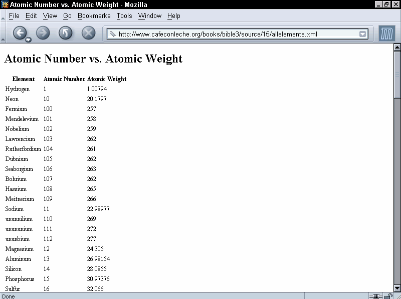

In This Chapter
What is XSL?
Overview of XSL transformations
Understanding XSL templates
Computing the value of a node with xsl:value-of
Processing multiple elements with xsl:for-each
Matching and selecting nodes with patterns
Understanding the default template rules
Attribute value templates
Deciding which output to include
Counting nodes
Sorting output
Modes
Output methods
The Extensible Stylesheet Language (XSL) includes both a transformation language and a formatting language. Each of these is an XML application. The transformation language provides elements that define rules for how one XML document is transformed into another XML document. The transformed XML document may use the vocabulary of the original document, or it may use a completely different set of elements. In particular, it may use the elements defined by the second part of XSL, the formatting objects. This chapter discusses the transformation language half of XSL.
The transformation and formatting halves of XSL can function independently of each other. For instance, the transformation language can transform an XML document into a well-formed HTML file, and completely ignore XSL formatting objects. This is the style of XSL previewed in Chapter 5 and emphasized in this chapter. Furthermore, it’s not absolutely required that a document written in XSL formatting objects be produced by using the transformation part of XSL on another XML document. For example, a program written in Java could read TeX or PDF files and translate them into XSL formatting objects.
In essence, XSL is two languages, not one. The first is a transformation language, the second a formatting language. The transformation language is useful independently of the formatting language. Its ability to move data from one XML representation to another makes it an important component of XML-based electronic commerce, electronic data interchange, metadata exchange, and any application that needs to convert between different XML representations of the same information. These uses are also united by their lack of concern with rendering data on a display for humans to read. They are purely about moving data from one computer system or program to another.
Consequently, many implementations of XSL focus exclusively on the transformation part and ignore the formatting objects. These are incomplete implementations, but nonetheless useful. Not all data must ultimately be rendered on a computer monitor or printed on paper.
Cross-Reference
Chapter 16 discusses the XSL formatting language.
Caution
XSL is still under development. The language has changed radically in the past, and will almost certainly change again in the future. This chapter is based on the November 16, 1999, XSLT 1.0 Recommendation. Because XSLT is now an official Recommendation of the World Wide Web Consortium (W3C), I’m hopeful that any changes that do occur will simply add to the existing syntax without invalidating style sheets that adhere to the 1.0 spec. Indeed, the W3C has begun work on XSLT 2.0, and it does seem likely that all legal XSLT 1.0 documents will still be legal XSLT 2.0 documents.
Not all software has caught up to the 1.0 Recommendation, however. In particular, Version 5.5 and earlier of Internet Explorer only implement a very old working draft of XSLT that looks almost nothing like the finished standard. You should not expect most of the examples in this chapter to work with these versions of IE, even after substantial tweaking. Internet Explorer 6.0 does implement something close to XSLT 1.0. However, there are still some bugs and areas where Microsoft did not follow the standard.
In an XSL transformation, an XSLT processor reads both an XML document and an XSLT style sheet. The processor applies the instructions in the XSLT style sheet to the data in the input document to generate a new XML document or fragment thereof. Most processors can also output HTML. With some effort, most XSLT processors can also be made to output essentially arbitrary text, though XSLT is designed primarily for XML-to-XML and XML-to-HTML transformations.
As you learned in Chapter 6, every well-formed XML document forms a tree. A tree is a data structure composed of connected nodes beginning with a top node called the root. The root is connected to its child nodes, each of which is connected to zero or more children of its own, and so forth. A diagram of a tree looks much like a genealogical descendant chart that lists the descendants of a single ancestor. One useful property of a tree is that each node and its children also form a tree. Thus, a tree is a hierarchical structure of trees in which each tree is built out of smaller trees.
For the purposes of XSLT, elements, attributes, namespaces, processing instructions, comments, and parsed character data are counted as nodes. Furthermore, the document itself is the root of the tree. Thus, XSLT processors model an XML document as a tree that contains seven kinds of nodes:
The root
Elements
Text
Attributes
Namespaces
Processing instructions
Comments
The DTD and document type declaration are specifically not included in this tree. However, a DTD may add default attribute values to some elements, which then become additional attribute nodes in the tree. Entity and character references are resolved into their replacement text. They are not counted as separate kinds of nodes themselves. Similarly, CDATA sections merely become part of text nodes. They are not treated differently than any other text.
For example, consider the XML document in Listing 15-1. This shows part of the periodic table of the elements. I’ll be using this as an example in this chapter. The root PERIODIC_TABLE element contains ATOM child elements. Each ATOM element contains several child elements providing the atomic number, atomic weight, symbol, boiling point, and so forth. A UNITS attribute specifies the units for those elements that have units.
Note
ELEMENT
ATOM. However, writing about ELEMENT elements and trying to distinguish between chemical elements and XML elements might create confusion. Thus, for the purposes of this chapter, ATOM seemed like the more legible option.Listing 15-1: An XML Periodic Table with Two Atoms: Hydrogen and Helium
<?xml version="1.0"?>
<?xml-stylesheet type="application/xml" href="15-2.xsl"?>
<PERIODIC_TABLE>
<ATOM STATE="GAS">
<NAME>Hydrogen</NAME>
<SYMBOL>H</SYMBOL>
<ATOMIC_NUMBER>1</ATOMIC_NUMBER>
<ATOMIC_WEIGHT>1.00794</ATOMIC_WEIGHT>
<BOILING_POINT UNITS="Kelvin">20.28</BOILING_POINT>
<MELTING_POINT UNITS="Kelvin">13.81</MELTING_POINT>
<DENSITY UNITS="grams/cubic centimeter">
<!-- At 300K, 1 atm -->
0.0000899
</DENSITY>
</ATOM>
<ATOM STATE="GAS">
<NAME>Helium</NAME>
<SYMBOL>He</SYMBOL>
<ATOMIC_NUMBER>2</ATOMIC_NUMBER>
<ATOMIC_WEIGHT>4.0026</ATOMIC_WEIGHT>
<BOILING_POINT UNITS="Kelvin">4.216</BOILING_POINT>
<MELTING_POINT UNITS="Kelvin">0.95</MELTING_POINT>
<DENSITY UNITS="grams/cubic centimeter"><!-- At 300K -->
0.0001785
</DENSITY>
</ATOM>
</PERIODIC_TABLE>Note
You can find a much longer version of Listing 15-1 that includes all elements through atomic number 110 http://www.cafeconleche.org/examples/periodic_table/allelements.xml. This longer version is used in several of the examples in this chapter.
Figure 15-1 displays a tree diagram of this document. It begins at the top with the root node (not the same as the root element), which contains two child nodes, the xml-stylesheet processing instruction and the root element PERIODIC_TABLE. (The XML declaration is not directly visible to the XSLT processor and is not included in the tree the XSLT processor operates on.) The PERIODIC_TABLE element contains five child nodes. Two of them are obvious, the two ATOM elements. The other three are almost invisible. These are the boundary white-space-text nodes between <PERIODIC_TABLE> and <ATOM STATE="GAS">, between </ATOM> and <ATOM STATE="GAS">, and between </ATOM> and </PERIODIC_TABLE>. XSLT can see all the white space between tags. It’s up to the style sheet to decide whether or not boundary white space is significant and should be preserved. Figure 15-1 is drawn under the assumption that these nodes aren't important, and thus omits them. However, other applications might treat them as significant.
Each ATOM element has an attribute node for its STATE attribute, text nodes for all the white space between tags, and a variety of child element nodes. Each child element contains a node for its text content, as well as nodes for any attributes, comments, and processing instructions it possesses. Notice, in particular, that many nodes are something other than elements. There are nodes for text, attributes, comments, namespaces, and processing instructions. Unlike CSS, XSL is not limited to working only with whole elements. It has a much more granular view of a document that enables you to base styles on comments, attributes, processing instructions, element content, and more.
Figure 15-1: Listing 15-1 as a tree diagram
XSLT operates by transforming one XML tree into another XML tree. More precisely, an XSLT processor accepts as input a tree represented as an XML document and produces as output a new tree, also represented as an XML document or document fragment. Consequently, the transformation part of XSL is also called the tree construction part. The XSL transformation language contains operators for selecting nodes from the tree, reordering the nodes, and outputting nodes. If one of these nodes is an element node, it may be an entire tree itself. Remember that all these operators, both for input and output, are designed for operation on a tree.
The input must be an XML document. XSLT cannot transform from non-XML formats such as PDF, TeX, Microsoft Word, PostScript, MIDI, or others. HTML and SGML are borderline cases because they're so close to XML. XSLT can work with HTML and SGML documents that satisfy XML’s well-formedness rules. However, XSLT cannot handle the wide variety of non-well-formed HTML and SGML that you encounter on most web sites and document production systems. XSLT is not a general-purpose language for transforming arbitrary data.
Most of the time, the output of an XSLT transformation is also an XML document. However, it can also be a result tree fragment that could be used as an external parsed entity in another XML document. (That is, it would be a well-formed XML document if it were enclosed in a single root element.) In other words, the output may not necessarily be a well-formed XML document, but it will at least be a plausible part of a well-formed XML document.
Tip
The xsl:output element and disable-output-escaping attribute discussed later in this chapter loosen this restriction somewhat.
Most XSLT processors also support output as HTML and/or raw text, although the specification does not require them to do so. To some extent, this allows you to transform to non-XML formats such as TeX, RTF, or PostScript. However, XSLT is not designed to make these transformations easy. It is designed for XML-to-XML transformations. If you need a non-XML output format, it will probably be easier to use XSLT to transform the XML to an intermediate XML format such as XSL-FO, and then use additional, non-XSLT software to transform that into the format you want.
An XSLT document contains template rules. A template rule has a pattern specifying the nodes it matches and a template to be instantiated and output when the pattern is matched. When an XSLT processor transforms an XML document under the control of an XSLT style sheet, it walks the XML document tree starting at the root, and following an order defined by the template rules. As the processor visits each node in the XML document, it compares that node with the pattern of each template rule in the style sheet. When it finds a node that matches a template rule’s pattern, it outputs the rule's template. This template generally includes some markup, new data, data copied out of the source XML document, as well as some directions about which nodes to process next.
XSLT uses XML to describe these rules, templates, and patterns. The root element of the XSLT document is either a stylesheet or a transform element in the http://www.w3.org/1999/XSL/Transform namespace. By convention, this namespace is mapped to the xsl prefix, but you’re free to pick another prefix if you prefer. In this chapter, I always use the xsl prefix. From this point forward, it should be understood that the prefix xsl is mapped to the http://www.w3.org/1999/XSL/Transform namespace.
Tip
If you get the namespace URI wrong, either by using a URI from an older draft of the specification, such as http://www.w3.org/TR/WD-xsl, or simply by making a typo in the normal URI, the XSLT processor will output the style sheet document itself instead of the transformed input document. This is the result of the interaction between several obscure sections of the XSLT 1.0 specification. The details aren’t important. What is important is that this very unusual behavior looks very much like a bug in the processor if you aren’t familiar with it. If you are familiar with it, fixing it is trivial; just correct the namespace URI to http://www.w3.org/1999/XSL/Transform.
Each template rule is an xsl:template element. The pattern of the rule is placed in the match attribute of the xsl:template element. The output template is the content of the xsl:template element. All instructions in the template for doing things, such as selecting parts of the input tree to include in the output tree, are performed by XSLT elements. These are identified by the xsl: prefix on the element names. Elements that do not have an xsl: prefix are part of the result tree.
Listing 15-2 shows a very simple XSLT style sheet with two template rules. The first template rule matches the root element PERIODIC_TABLE. It replaces this element with an html element. The contents of the html element are the results of applying the other templates in the document to the contents of the PERIODIC_TABLE element.
The second template matches ATOM elements. It converts each ATOM element in the input document into a P element in the output document. The xsl:apply-templates rule inserts the text of the matched source element into the output document. Thus, the contents of a P element will be the text (but not the markup) contained in the corresponding ATOM element.
The xsl:stylesheet root element must have a version attribute with the value 1.0. It will normally also have an xmlns:xsl namespace declaration that binds the prefix xsl to the http://www.w3.org/1999/XSL/Transform namespace URI.
Listing 15-2: An XSLT Style Sheet for the Periodic Table with Two Template Rules
<?xml version="1.0"?>
<xsl:stylesheet version="1.0"
xmlns:xsl="http://www.w3.org/1999/XSL/Transform">
<xsl:template match="PERIODIC_TABLE">
<HTML>
<xsl:apply-templates/>
</HTML>
</xsl:template>
<xsl:template match="ATOM">
<P>
<xsl:apply-templates/>
</P>
</xsl:template>
</xsl:stylesheet>
The xsl:transform element can be used in place of xsl:stylesheet if you prefer. This is an exact synonym with the same syntax, semantics, and attributes, as in this example:
<?xml version="1.0"?>
<xsl:transform version="1.0"
xmlns:xsl="http://www.w3.org/1999/XSL/Transform">
<!-- templates go here -->
</xsl:transform>
In this book, I will stick to xsl:stylesheet.
There are three primary ways to transform XML documents into other formats, such as HTML, with an XSLT style sheet:
The XML document and associated style sheet are both served to the client (web browser), which then transforms the document as specified by the style sheet and presents it to the user.
The server applies an XSLT style sheet to an XML document to transform it to some other format (generally HTML) and sends the transformed document to the client (web browser).
A third program transforms the original XML document into some other format (often HTML) before the document is placed on the server. Both server and client only deal with the transformed document.
Each of these three approaches uses different software, although they all use the same XML documents and XSLT style sheets. A typical web server sending XML documents to Mozilla is an example of the first approach. A servlet-compatible web server using Apache’s Cocoon (http://cocoon.apache.org) is an example of the second approach. A human using Michael Kay’s command-line Saxon program (http://saxon.sourceforge.net) to transform XML documents to HTML documents, then placing the HTML documents on a web server is an example of the third approach. However, these all use the same XSLT language.
In this chapter, I emphasize the third approach, primarily because at the time of this writing, specialized converter programs, such as Michael Kay's Saxon and the Gnome Project’s xsltproc (http://xmlsoft.org/XSLT.html), provide the most complete and accurate implementations of the XSLT specification. Furthermore, this approach offers the broadest compatibility with legacy web browsers and servers, whereas the first approach requires a more recent browser than many users use, and the second approach requires special web server software. In practice, though, requiring a different server is not nearly as onerous as requiring a particular client. You, yourself, can install your own special server software; but you cannot rely on your visitors to install particular client software.
xsltproc is a character mode application written in C. It was originally developed for Linux, but has been ported to most common UNIXes, Windows, and Mac OS X. It may be installed by default on a few Linux distros, but most users will need to download it from http://xmlsoft.org/XSLT/downloads.html first. You’ll also need to install libxml, the XML parser it depends on. You can download this from http://www.xmlsoft.org/downloads.html.
Tip
On Windows, you’ll also need to install the iconv library, which you can get from the same site. All three libraries are distributed as zip files. When unzipped, these archives each contain a lib and util directory. Simply copy the complete contents of all three lib and util directories to your C:\WINDOWS or C:\WINNT directory.
Note
Although I primarily use xsltproc in this chapter, the examples should work with Saxon, Xalan, or any other XSLT processor that implements the XSLT 1.0 Recommendation. Some processors may produce slightly different output that does not affect the final results, especially when outputting HTML. For example, they may indent the tags a little differently, or add a META tag or two to the HEAD. Normally these details aren’t very relevant, but if they concern you, you can control them using the xsl:output instruction discussed toward the end of this chapter.
After everything’s installed in the right locations, you run xsltproc by typing the following at the shell prompt or in a DOS window:
C:\> xsltproc stylesheet.xsl document.xml
The first argument is the style sheet. The second argument is the XML document to transform. You can add additional filenames or URLs to transform more than one document. By default, the output is printed in the same shell prompt/DOS window where you launched the processor. To redirect the output into a file, you can use the -o option. For example, this command applies the style sheet in Listing 15-2 to the document in Listing 15-1, and puts the output in the file 15-3.html:
C:\> xsltproc -o 15.3.html 15-2.xsl 15-1.xml
Listing 15-2 transforms input documents to well-formed HTML files, as discussed in Chapter 6. However, you can transform from any XML application to any other as long as you can write a style sheet to support the transformation. For example, you can imagine a style sheet that transforms from Vector Markup Language (VML) documents to Scalable Vector Graphics (SVG) documents:
% xsltproc -o pinktriangle.svg VMLToSVG.xsl pinktriangle.vml
Most other command-line XSLT processors behave similarly, though of course they'll have different command-line arguments and options.
Listing 15-3 shows the output of running Listing 15-1 through xsltproc with the XSLT style sheet in Listing 15-2. Notice that xsltproc does not attempt to clean up the HTML it generates, which has a lot of white space. This is not important because ultimately you want to view the file in a web browser that trims white space. Figure 15-2 shows Listing 15-3 loaded into Netscape Navigator 3.0. Because Listing 15-3 is standard HTML, you don’t need an XML-capable browser to view it.
Listing 15-3: The HTML Produced by Applying the Style Sheet in Listing 15-2 to the XML in Listing 15-1
<HTML>
<P>
Hydrogen
H
1
1.00794
20.28
13.81
0.0000899
</P>
<P>
Helium
He
2
4.0026
4.216
0.95
0.0001785
</P>
</HTML>
Figure 15-2: The page produced by applying the style sheet in Listing 15-2 to the XML document in Listing 15-1.
Instead of preprocessing the XML document, you can send the client both the XML file and the XSLT file that describes how to render it. The client is responsible for applying the style sheet to the document and rendering it accordingly. This is more work for the client, but places much less load on the server. In this case, the XSLT style sheet must transform the document into an XML vocabulary the client understands. HTML is a likely choice, though other XML formats are options as well.
Attaching an XSLT style sheet to an XML document is easy. Simply insert an xml-stylesheet processing instruction in the prolog immediately after the XML declaration. This processing instruction should have a type attribute with the value application/xml and an href attribute whose value is a URL pointing to the style sheet, as shown here:
<?xml version="1.0"?> <?xml-stylesheet type="application/xml" href="15-2.xsl"?>
This is also how you attach a CSS style sheet to a document. The only difference here is that the type attribute has the value application/xml instead of text/css.
Note
In the not too distant future, the more specific MIME media type application/xslt+xml will be available to distinguish XSLT documents from all other XML documents. After browsers are revised to support this, you will be able to write the xml-stylesheet processing instruction like this instead:
<?xml-stylesheet type="application/xslt+xml" href="15-2.xsl"?>
Internet Explorer’s XSLT support differs from the XSLT 1.0 Recommendation in several ways. Most importantly, it expects the nonstandard MIME media type text/xsl in the xml-stylesheet processing instruction rather than application/xml. Otherwise, Internet Explorer 6.0 has reasonable, though imperfect, support for XSLT.
Internet Explorer 5.0 and 5.5 do not support XSLT 1.0 out of the box. They support an earlier, beta version of XSLT with some Microsoft extensions. You can tell the difference by looking at the namespace URI. Style sheets written for IE5 use the URI http://www.w3.org/TR/WD-xsl. Style sheets written for all other processors use the URI http://www.w3.org/1999/XSL/Transform. To work with XML, it really helps to upgrade to Internet Explorer 6.0 or later. If you must stick with IE 5.5 or earlier, you can upgrade the MSXML parser instead. Download MSXML 3.0 from http://msdn.microsoft.com/library/default.asp?url=/downloads/list/xmlgeneral.asp. This installer does not automatically replace the earlier, nonstandard-compliant MSXML 2.5 that is bundled. To replace the old version, you also have to download and run a separate program called xmlinst.exe, which you can get from the same page where you found MSXML 3.0. Otherwise, you’ll still be stuck with the old, out-of-date beta version of XSLT.
Caution
MSXML 4.0 is also available but cannot replace the MSXML 2.5 bundled with Internet Explorer 5.5 and earlier. If you're using Internet Explorer 5.x, you should use MSXML 3.0, not an earlier, nor a later, version.
Even once this is done, there are still some bugs and areas where Microsoft did not follow the specification, so this is not quite a complete implementation of XSLT 1.0. If you find that something in this chapter doesn’t work in Internet Explorer, please complain to Microsoft, not to me.
Template rules defined by xsl:template elements are the most important part of an XSLT style sheet. These associate particular output with particular input. Each xsl:template element has a match attribute that specifies which nodes of the input document the template is instantiated for.
The content of the xsl:template element is the template to be instantiated. A template may contain both text, which will appear literally in the output document, and XSLT instructions that copy data from the input XML document to the result. Because all XSLT instructions are in the http://www.w3.org/1999/XSL/Transform namespace, it’s easy to distinguish between the elements that are literal data to be copied to the output and instructions. For example, here is a template that matches the root node of the input tree:
<xsl:template match="/">
<HTML>
<HEAD>
</HEAD>
<BODY>
</BODY>
</HTML>
</xsl:template>
When the XSLT processor reads the input document, the first node it sees is the root. This rule matches that root node, and tells the XSLT processor to emit this element:
<HTML> <HEAD> </HEAD> <BODY> </BODY> </HTML>
This text is well-formed HTML. Because the XSLT document is itself an XML document, its contents–templates included–must be well-formed XML.
If you were to use the preceding rule, and only the preceding rule, in an XSLT style sheet, the output would be limited to the above six tags. That’s because no instructions in the rule tell the formatter to move down the tree and look for further matches against the templates in the style sheet.
To get beyond the root, you have to tell the formatting engine to process the children of the root. In general, to include content in the child nodes, you have to recursively process the nodes through the XML document. The element that does this is xsl:apply-templates. An xsl:apply-templates element tells the processor to compare each child node of the matched source element against the templates in the style sheet and, if a match is found, output the template for the matched node. The template for the matched node may itself contain xsl:apply-templates elements to search for matches for its children. When the XSLT engine processes a node, the node is treated as a complete tree. This is the advantage of the tree structure. Each part can be treated the same way as the whole. For example, Listing 15-4 is an XSLT style sheet that uses the xsl:apply templates element to process the child nodes.
Listing 15-4: An XSLT Style Sheet That Recursively Processes the Children of the Root
<?xml version="1.0"?>
<xsl:stylesheet version="1.0"
xmlns:xsl="http://www.w3.org/1999/XSL/Transform">
<xsl:template match="/">
<HTML>
<xsl:apply-templates/>
</HTML>
</xsl:template>
<xsl:template match="PERIODIC_TABLE">
<BODY>
<xsl:apply-templates/>
</BODY>
</xsl:template>
<xsl:template match="ATOM">
An Atom
</xsl:template>
</xsl:stylesheet>
When this style sheet is applied to Listing 15-1, here’s what happens:
The root node is compared with all template rules in the style sheet. It matches the first one.
The <HTML> tag is written out.
The xsl:apply-templates element causes the formatting engine to process the child nodes of the root node of the input document.
The first child of the root, the xml-stylesheet processing instruction, is compared with the template rules. It doesn’t match any of them, so no output is generated.
The second child of the root node of the input document, the root element PERIODIC_TABLE, is compared with the template rules. It matches the second template rule.
The <BODY> tag is written out.
The xsl:apply-templates element in the body element causes the XSLT engine to process the child nodes of PERIODIC_TABLE.
a. The first child of the PERIODIC_TABLE element, that is the Hydrogen ATOM element, is compared with the template rules. It matches the third template rule.
b. The text "An Atom" is output.
c. The second child of the PERIODIC_TABLE element, that is the Helium ATOM element, is compared with the template rules. It matches the third template rule.
d. The text "An Atom" is output.
e. The </BODY> tag is written out.
4. The </HTML> tag is written out.
5. Processing is complete.
The end result is as follows:
<HTML>
<BODY>
An Atom
An Atom
</BODY>
</HTML>Note
I actually skipped a couple of steps here. The boundary white space text nodes were also processed. Their values were copied by the default template rules, which is why there’s so much white space in the output. You’ll learn about the default template rules for text nodes shortly.
To replace the text "An Atom" with the name of the ATOM element as given by its NAME child, you need to specify that templates should be applied to the NAME children of the ATOM element. To choose a particular set of children instead of all children, supply xsl:apply-templates with a select attribute designating the children to be selected, as in this template rule:
<xsl:template match="ATOM"> <xsl:apply-templates select="NAME"/> </xsl:template>
The select attribute uses the same kind of patterns as the match attribute of the xsl:template element. For now, I’ll stick to simple names of elements; but in the section on patterns for matching and selecting later in this chapter, you’ll see many more possibilities for both select and match. If no select attribute is present, all child element, text, comment, and processing instruction nodes are selected. (Attribute and namespace nodes are not selected.)
The result of adding this rule to the style sheet of Listing 15-5 and applying it to Listing 15-1 is this:
<HTML> <BODY> Hydrogen Helium </BODY> </HTML>
The xsl:value-of element computes the string value of something (most of the time, though not always, something in the input document) and copies that plain text value into the output document. The select attribute of the xsl:value-of element specifies exactly which something’s value is being computed.
The exact content of the string value depends on the type of the node. The most common type of node is element, and the value of an element node is particularly simple. It’s the concatenation of all the character data (but not markup) between the element's start-tag and end-tag. For example, the first ATOM element in Listing 15-1 is as follows:
<ATOM STATE="GAS">
<NAME>Hydrogen</NAME>
<SYMBOL>H</SYMBOL>
<ATOMIC_NUMBER>1</ATOMIC_NUMBER>
<ATOMIC_WEIGHT>1.00794</ATOMIC_WEIGHT>
<BOILING_POINT UNITS="Kelvin">20.28</BOILING_POINT>
<MELTING_POINT UNITS="Kelvin">13.81</MELTING_POINT>
<DENSITY UNITS="grams/cubic centimeter">
<!-- At 300K, 1 atm -->
0.0000899
</DENSITY>
</ATOM>
The value of this element is:
Hydrogen
H
1
1.00794
1
20.28
13.81
0.0000899
I calculated this value by stripping out all the tags and comments. Everything else including white space was left intact. The values of the other six node types are calculated similarly, mostly in obvious ways. Table 15-1 summarizes.
Table 15-1
Values of Nodes
|
Node Type |
Value |
|
Root |
The value of the root element |
|
Element |
The concatenation of all parsed character data contained in the element, including character data in any of the descendants of the element |
|
Text |
The text of the node; essentially the node itself |
|
Attribute |
The normalized attribute value as specified by Section 3.3.3 of the XML 1.0 Recommendation; basically the attribute value after entities are resolved and leading and trailing white space is stripped; does not include the name of the attribute, the equals sign, or the quotation marks |
|
Namespace |
The URI of the namespace |
|
Processing instruction |
The data in the processing instruction; does not include the target, |
|
Comment |
The text of the comment, |
For example, suppose you want to replace the literal text "An Atom" with the name of the ATOM element, as given by the contents of its NAME child. You can replace "An Atom" with <xsl:value-of select="NAME"/>, like this:
<xsl:template match="ATOM"> <xsl:value-of select="NAME"/> </xsl:template>
Then, when you apply the style sheet to Listing 15-1, this text is generated:
<HTML> <BODY> Hydrogen Helium </BODY> </HTML>
The item whose value is selected, the NAME element in this example, is relative to the current node. The current node is the item matched by the template, the particular ATOM element in this example. Thus, when the Hydrogen ATOM is matched by <xsl:template match="ATOM">, the Hydrogen ATOM’s NAME is selected by xsl:value-of. When the Helium ATOM is matched by <xsl:template match="ATOM">, the Helium ATOM's NAME is selected by xsl:value-of.
The xsl:value-of element should only be used in contexts where it is obvious which node’s value is being taken. If there are multiple possible items that could be selected, only the first one will be chosen. For example, this is a poor rule because a typical PERIODIC_TABLE element contains more than one ATOM:
<xsl:template match="PERIODIC_TABLE"> <xsl:value-of select="ATOM"/> </xsl:template>
There are two ways of processing multiple elements in turn. The first method you’ve already seen. Simply use xsl:apply-templates with a select attribute that chooses the particular elements that you want to visit, like this:
<xsl:template match="PERIODIC_TABLE">
<xsl:apply-templates select="ATOM"/>
</xsl:template>
<xsl:template match="ATOM">
<xsl:value-of select="."/>
</xsl:template>
The select="." in the second template tells the formatter to take the value of the matched node, ATOM in this example.
The second option is xsl:for-each. The xsl:for-each element processes each element chosen by its select attribute in turn. However, no additional template rule is required. Instead, the content of the xsl:for-each element serves as a template. For example:
<xsl:template match="PERIODIC_TABLE">
<xsl:for-each select="ATOM">
<xsl:value-of select="."/>
</xsl:for-each>
</xsl:template>
This is useful when you need to format the same content differently in different places in the style sheet.
The match attribute of the xsl:template element supports a complex syntax that allows you to indicate precisely which nodes you do and do not want to match. The select attribute of xsl:apply-templates, xsl:value-of, xsl:for-each, xsl:copy-of, and xsl:sort supports an even more powerful superset of this syntax called XPath that allows you to express exactly which nodes you do and do not want to select. Various patterns for matching and selecting nodes are discussed in following sections.
In order that the output document be well-formed, the first thing output from an XSL transformation should be the output document’s root element. Consequently, XSLT style sheets generally start with a rule that applies to the root node. To specify the root node in a rule, you give its match attribute the value "/", as in the following example:
<xsl:template match="/">
<DOCUMENT>
<xsl:apply-templates/>
</DOCUMENT>
</xsl:template>
This rule applies to the root node and only the root node of the input tree. When the root node is read, the tag <DOCUMENT> is output, the children of the root node are processed, then the </DOCUMENT> tag is output. This rule overrides the default rule for the root node. Listing 15-5 shows a style sheet with a single rule that applies to the root node.
Listing 15-5: An XSLT Style Sheet with One Rule for the Root Node
<?xml version="1.0"?>
<xsl:stylesheet version="1.0"
xmlns:xsl="http://www.w3.org/1999/XSL/Transform">
<xsl:template match="/">
<HTML>
<HEAD>
<TITLE>Atomic Number vs. Atomic Weight</TITLE>
</HEAD>
<BODY>
<TABLE>
Atom data will go here
</TABLE>
</BODY>
</HTML>
</xsl:template>
</xsl:stylesheet>
Because this style sheet only provides a rule for the root node, and because that rule’s template does not specify any further processing of child nodes, only literal output that’s included in the template is inserted in the resulting document. In other words, the result of applying the style sheet in Listing 15-5 to Listing 15-1 (or any other well-formed XML document) is this:
<HTML>
<HEAD>
<TITLE>Atomic Number vs. Atomic Weight</TITLE>
</HEAD>
<BODY>
<TABLE>
Atom data will go here
</TABLE>
</BODY>
</HTML>
As previously mentioned, the most basic pattern contains a single element name that matches all elements with that name. For example, this template matches ATOM elements and makes their ATOMIC_NUMBER children bold:
<xsl:template match="ATOM"> <B><xsl:value-of select="ATOMIC_NUMBER"/></B> </xsl:template>
Listing 15-6 demonstrates a style sheet that expands on Listing 15-5. First, an xsl:apply-templates element is included in the template rule for the root node. This element uses a select attribute to ensure that only PERIODIC_TABLE elements are processed.
Second, a rule that only applies to PERIODIC_TABLE elements is created using match="PERIODIC_TABLE". This rule sets up the header for the table, and then applies templates to form the body of the table from ATOM elements.
Finally, the ATOM rule specifically selects the ATOM element's NAME, ATOMIC_NUMBER, and ATOMIC_WEIGHT child elements with <xsl:value-of select="NAME"/>, <xsl:value-of select="ATOMIC_NUMBER"/>, and <xsl:value-of select="ATOMIC_WEIGHT"/>. These are wrapped up inside HTML’s TR and TD elements, so that the end result is a table of atomic numbers matched to atomic weights. Figure 15-3 shows the output of applying the style sheet in Listing 15-6 to the complete periodic table document rendered in Netscape Navigator.
One thing you might want to note about this style sheet: The exact order of the NAME, ATOMIC_NUMBER, and ATOMIC_WEIGHT elements in the input document is irrelevant. They appear in the output in the order they were selected; that is, first number, then weight. Conversely, the individual atoms are sorted in alphabetical order as they appear in the input document. Later, you’ll see how to use an xsl:sort element to change that so you can arrange the atoms in the more conventional atomic number order.
Listing 15-6: Templates Applied to Specific Classes of Element with Select
<?xml version="1.0"?>
<xsl:stylesheet version="1.0"
xmlns:xsl="http://www.w3.org/1999/XSL/Transform">
<xsl:template match="/">
<HTML>
<HEAD>
<TITLE>Atomic Number vs. Atomic Weight</TITLE>
</HEAD>
<BODY>
<xsl:apply-templates select="PERIODIC_TABLE"/>
</BODY>
</HTML>
</xsl:template>
<xsl:template match="PERIODIC_TABLE">
<H1>Atomic Number vs. Atomic Weight</H1>
<TABLE>
<TH>Element</TH>
<TH>Atomic Number</TH>
<TH>Atomic Weight</TH>
<xsl:apply-templates select="ATOM"/>
</TABLE>
</xsl:template>
<xsl:template match="ATOM">
<TR>
<TD><xsl:value-of select="NAME"/></TD>
<TD><xsl:value-of select="ATOMIC_NUMBER"/></TD>
<TD><xsl:value-of select="ATOMIC_WEIGHT"/></TD>
</TR>
</xsl:template>
</xsl:stylesheet>
Figure 15-3: A table showing atomic number versus atomic weight in Netscape Navigator
Sometimes you want a single template to apply to more than one element. You can indicate that a template matches all elements by using the asterisk wildcard (*) in place of an element name in the match attribute. For example, this template says that all input elements should be wrapped in a P element:
<xsl:template match="*">
<P>
<xsl:value-of select="."/>
</P>
</xsl:template>
Of course this is probably more than you want. You’d like to use the template rules already defined for PERIODIC_TABLE and ATOM elements as well as the root node, and only use this rule for the other elements. Fortunately, you can. In the event that two rules both match a single node, by default the more specific one takes precedence. In this case, that means that ATOM elements will use the template with match="ATOM" instead of a template that merely has match="*". However, NAME, BOILING_POINT, ATOMIC_NUMBER and other elements that don’t match a more specific template will cause the match="*" template to activate.
You can place a namespace prefix in front of the asterisk to indicate that only elements in a particular namespace should be matched. For example, this template matches all SVG elements, presuming that the prefix svg is mapped to the normal SVG URI http://www.w3.org/2000/svg in the style sheet.
<xsl:template match="svg:*">
<DIV>
<xsl:value-of select="."/>
</DIV>
</xsl:template>
Of course in Listing 15-1, there aren’t any elements from this namespace, so this template wouldn’t produce any output. However, it might when applied to a different document that did include some SVG.
You’re not limited to the children of the current node in match attributes. You can use the / symbol to match hierarchies of elements. Alone, the / symbol refers to the root node. However, between two names it indicates that the second is the child of the first. For example, ATOM/NAME refers to NAME elements that are children of ATOM elements.
In xsl:template elements, this enables you to match only some of the elements of a given kind. For example, this template rule marks SYMBOL elements that are children of ATOM elements strong. It does nothing to SYMBOL elements that are not direct children of ATOM elements.
<xsl:template match="ATOM/SYMBOL"> <STRONG><xsl:value-of select="."/></STRONG> </xsl:template>
Caution
Remember that this rule selects SYMBOL elements that are children of ATOM elements, not ATOM elements that have SYMBOL children. In other words, the . in <xsl:value-of select="."/> refers to the SYMBOL and not to the ATOM.
You can specify deeper matches by stringing patterns together. For example, PERIODIC_TABLE/ATOM/NAME selects NAME elements whose parent is an ATOM element whose parent is a PERIODIC_TABLE element.
You can also use the * wildcard to substitute for an arbitrary element name in a hierarchy. For example, this template rule applies to all SYMBOL elements that are grandchildren of a PERIODIC_TABLE element.
<xsl:template match="PERIODIC_TABLE/*/SYMBOL"> <STRONG><xsl:value-of select="."/></STRONG> </xsl:template>
Finally, as previously described, a / by itself selects the root node of the document. For example, this rule applies to all PERIODIC_TABLE elements that are root elements of the document:
<xsl:template match="/PERIODIC_TABLE"> <HTML><xsl:apply-templates/></HTML> </xsl:template>
While / refers to the root node, /* refers to the root element, whatever it is. For example, this template doesn't care whether the root element is PERIODIC_TABLE, DOCUMENT, or SCHENECTADY. It produces the same output in all cases.
<xsl:template match="/*">
<HTML>
<HEAD>
<TITLE>Atomic Number vs. Atomic Weight</TITLE>
</HEAD>
<BODY>
<xsl:apply-templates/>
</BODY>
</HTML>
</xsl:template>
Sometimes, especially with an uneven hierarchy, you’ll find it easier to bypass intermediate nodes and simply select all the elements of a given type, whether they’re immediate children, grandchildren, great-grandchildren, or what have you. The double slash, //, refers to a descendant at an arbitrary level. For example, this template rule applies to all NAME descendants of PERIODIC_TABLE, no matter how deep:
<xsl:template match="PERIODIC_TABLE//NAME"> <EM><xsl:value-of select="."/></EM> </xsl:template>
The periodic table example is fairly shallow, but this trick becomes more important in deeper and less predictable hierarchies, especially when an element can contain other elements of its own type (for example, an ATOM contains an ATOM).
The // operator at the beginning of a pattern selects any descendant of the root node. For example, this template rule processes all ATOMIC_NUMBER elements while completely ignoring their location:
<xsl:template match="//ATOMIC_NUMBER"> <EM><xsl:value-of select="."/></EM> </xsl:template>
You might want to apply a particular style to a particular single element without changing all other elements of that type. The simplest way to do this in XSLT is to attach a style to the element's ID. This is done with the id() selector, which contains the ID value in single quotes. For example, this rule makes the element with the ID e47 bold:
<xsl:template match="id('e47')">
<B><xsl:value-of select="."/></B>
</xsl:template>
This assumes, of course, that the elements you want to select in this fashion have an attribute declared as type ID in the source document's DTD. This may not be the case, however. For one thing, many documents do not have DTDs. They’re merely well-formed, not valid. And even if they have a DTD, there’s no guarantee that any element has an ID type attribute.
Cross-Reference
ID-type attributes are not simply attributes with the name ID. ID type attributes are discussed in Chapter 9.
As you saw in Chapter 5, the @ sign matches against attributes and selects nodes according to attribute names. Simply prefix the name of the attribute you want to select with the @ sign. For example, this template rule matches UNITS attributes, and wraps them in an I element:
<xsl:template match="@UNITS">
<I><xsl:value-of select="."/></I>
</xsl:template>
However, merely adding this rule to the style sheet will not automatically produce italicized units in the output, because attributes are not children of the elements that contain them. Therefore, by default, when an XSLT processor is walking the tree, it does not see attribute nodes. You have to explicitly process them using xsl:apply-templates with an appropriate select attribute. Listing 15-7 demonstrates with a style sheet that outputs a table of atomic numbers versus melting points. Not only is the value of the MELTING_POINT element written out, so is the value of its UNITS attribute. This is selected by <xsl:apply-templates select="@UNITS"/> in the template rule for MELTING_POINT elements.
Listing 15-7: An XSLT Style Sheet That Selects the UNITS Attribute with @
<?xml version="1.0"?>
<xsl:stylesheet version="1.0"
xmlns:xsl="http://www.w3.org/1999/XSL/Transform">
<xsl:template match="/PERIODIC_TABLE">
<HTML>
<BODY>
<H1>Atomic Number vs. Melting Point</H1>
<TABLE>
<TH>Element</TH>
<TH>Atomic Number</TH>
<TH>Melting Point</TH>
<xsl:apply-templates/>
</TABLE>
</BODY>
</HTML>
</xsl:template>
<xsl:template match="ATOM">
<TR>
<TD><xsl:value-of select="NAME"/></TD>
<TD><xsl:value-of select="ATOMIC_NUMBER"/></TD>
<TD><xsl:apply-templates select="MELTING_POINT"/></TD>
</TR>
</xsl:template>
<xsl:template match="MELTING_POINT">
<xsl:value-of select="."/>
<xsl:apply-templates select="@UNITS"/>
</xsl:template>
<xsl:template match="@UNITS">
<I><xsl:value-of select="."/></I>
</xsl:template>
</xsl:stylesheet>
Recall that the value of an attribute node is simply the normalized string value of the attribute. After you apply the style sheet in Listing 15-7, ATOM elements come out formatted like this:
<TR> <TD>Hydrogen</TD><TD>1</TD><TD>13.81<I>Kelvin</I></TD> </TR> <TR> <TD>Helium</TD><TD>2</TD><TD>0.95<I>Kelvin</I></TD> </TR>
You can combine attributes with elements using the various hierarchy operators. For example, the pattern BOILING_POINT/@UNITS refers to the UNITS attribute of a BOILING_POINT element. ATOM/*/@UNITS matches any UNITS attribute of a child element of an ATOM element. This is especially helpful when matching against attributes in template rules.
You can also use the @* wildcard to match all attributes of an element, for example BOILING_POINT/@* to match all attributes of BOILING_POINT elements. You can also add a namespace prefix after the @ to match all attributes in a declared namespace. For example, @xlink:* matches all the XLink attributes, such as xlink:show, xlink:type, and xlink:href, assuming the xlink prefix is mapped to the http://www.w3.org/1999/xlink XLink namespace URI.
Most of the time, you should simply ignore comments in XML documents. Making comments an essential part of a document is a very bad idea. By default, an XSLT style sheet won’t do anything with comments. Nonetheless, XSLT does provide a means to match a comment if you absolutely have to.
To match a comment, use the comment() pattern. Although this pattern has functionlike parentheses, it never actually takes any arguments. For example, this template rule italicizes all comments:
<xsl:template match="comment()">
<I><xsl:value-of select="."/></I>
</xsl:template>
You can use the hierarchy operators to select particular comments. For example, recall that a DENSITY element looks like this:
<DENSITY UNITS="grams/cubic centimeter">
<!-- At 300K, 1 atm -->
0.0000899
</DENSITY>
This rule only matches comments that occur inside DENSITY elements:
<xsl:template match="DENSITY/comment()"> <I><xsl:value-of select="."/></I> </xsl:template>
The only reason Listing 15-1 uses a comment to specify conditions instead of an attribute or element is precisely for this example. In practice, you should never put important information in comments. The real reason XSLT allows you to select comments is so that a style sheet can transform from one XML application to another while leaving the comments intact. Any other use indicates a poorly designed original document. The following rule matches all comments, and copies them back out again using the xsl:comment element.
<xsl:template match="comment()"> <xsl:comment><xsl:value-of select="."/></xsl:comment> </xsl:template>
When it comes to writing structured, intelligible, maintainable XML, processing instructions aren’t much better than comments. However, there are occasional genuine needs for them, including attaching style sheets to documents.
The processing-instruction() function matches processing instructions. The argument to processing-instruction() is a quoted string giving the target of the processing instruction to select. If you do not include an argument, all processing instructions are matched. For example, this rule matches the processing instruction children of the root node (most likely the xml-stylesheet processing instruction). The xsl:processing-instruction element inserts a processing instruction with the specified name and value in the output document. For example, this template rule matches all processing instructions in the document’s prolog and epilog and changes each one into a comment containing the processing instruction data:
<xsl:template match="/processing-instruction()">
<xsl:comment>
<xsl:value-of select="."/>
</xsl:comment>
</xsl:template>
This rule only matches xml-stylesheet processing instructions:
<xsl:template
match="processing-instruction('xml-stylesheet')">
<xsl:comment>
<xsl:value-of select="."/>
</xsl:comment>
</xsl:template>
In fact, one of the primary reasons for distinguishing between the root element and the root node is so that processing instructions from the prolog can be read and processed. Although the xml-stylesheet processing instruction uses a name = value syntax, XSL does not consider these to be attributes because processing instructions are not elements. The value of a processing instruction is simply everything between the white space following its name and the closing ?>.
Text nodes are generally ignored as nodes, although their values are included as part of the value of a selected element. However, the text() operator does enable you to specifically select the text child of an element. Despite the parentheses, this operator takes no arguments. For example, this rule emboldens all text:
<xsl:template match="text()"> <B><xsl:value-of select="."/></B> </xsl:template>
The main reason this operator exists is for the default rules. XSLT processors must provide the following default rule whether the author specifies it or not:
<xsl:template match="text()"> <xsl:value-of select="."/> </xsl:template>
This means that whenever a template is applied to a text node, the text of the node is output. If you do not want the default behavior, you can override it. For example, including the following empty template rule in your style sheet will prevent text nodes from being output unless specifically matched by another rule:
<xsl:template match="text()" />
The vertical bar (|) allows a template rule to match multiple patterns. If a node matches one pattern or the other, it will activate the template. For example, this template rule matches both ATOMIC_NUMBER and ATOMIC_WEIGHT elements:
<xsl:template match="ATOMIC_NUMBER|ATOMIC_WEIGHT"> <B><xsl:apply-templates/></B> </xsl:template>
You can include white space around the | if that makes the code clearer, as in this template rule:
<xsl:template match="ATOMIC_NUMBER | ATOMIC_WEIGHT"> <B><xsl:apply-templates/></B> </xsl:template>
You can also use more than two patterns in sequence. For example, this template rule applies to ATOMIC_NUMBER, ATOMIC_WEIGHT, and SYMBOL elements (that is, it matches ATOMIC_NUMBER, ATOMIC_WEIGHT and SYMBOL elements):
<xsl:template match="ATOMIC_NUMBER | ATOMIC_WEIGHT | SYMBOL"> <B><xsl:apply-templates/></B> </xsl:template>
The / operator is evaluated before the | operator. Thus, the following template rule matches an ATOMIC_NUMBER child of an ATOM, or an ATOMIC_WEIGHT of unspecified parentage, not an ATOMIC_NUMBER child of an ATOM or an ATOMIC_WEIGHT child of an ATOM.
<xsl:template match="ATOM/ATOMIC_NUMBER|ATOMIC_WEIGHT"> <B><xsl:apply-templates/></B> </xsl:template>
So far, I’ve merely tested for the presence of various nodes. However, you can test for more details about the nodes that match a pattern using []. You can perform many different tests, including the following:
Whether an element contains a given child, attribute, or other node
Whether the value of an attribute is a certain string
Whether the value of an element contains a string
What position a given node occupies in the hierarchy
For example, seaborgium, element 106, has only been created in microscopic quantities. Even its most long-lived isotope has a half-life of only 30 seconds. With such a hard-to-create, short-lived element, it’s virtually impossible to measure the density, melting point, and other bulk properties. Consequently, the periodic table document omits the elements describing the bulk properties of seaborgium and similar atoms because the data simply doesn’t exist. If you want to create a table of atomic number versus melting point, you should omit those elements with unknown melting points. To do this, you can provide one template for ATOM elements that have MELTING_POINT children and another one for elements that don’t, like this:
<!-- Include nothing for arbitrary atoms -->
<xsl:template match="ATOM" />
<!-- Include a table row for atoms that do have
melting points. This rule will override the
previous one for those atoms that do have
melting points. -->
<xsl:template match="ATOM[MELTING_POINT]">
<TR>
<TD><xsl:value-of select="NAME"/></TD>
<TD><xsl:value-of select="MELTING_POINT"/></TD>
</TR>
</xsl:template>
Note here that it is the ATOM element being matched, not the MELTING_POINT element as in the case of ATOM/MELTING_POINT.
The test brackets can contain more than simply a child-element name. In fact, they can contain any XPath expression. (XPath expressions are a superset of match patterns that are discussed in the next section.) If the specified element has a child matching that expression, it is considered to match the total pattern. For example, this template rule matches ATOM elements with NAME or SYMBOL children:
<xsl:template match="ATOM[NAME | SYMBOL]"> </xsl:template>
This template rule matches ATOM elements with a DENSITY child element that has a UNITS attribute:
<xsl:template match="ATOM[DENSITY/@UNITS]"> </xsl:template>
To find all child elements that have UNITS attributes, use * to find all elements and [@UNITS] to winnow those down to the ones with UNITS attributes, like this:
<xsl:template match="ATOM"> <xsl:apply-templates select="*[@UNITS]"/> </xsl:template>
One type of pattern testing that proves especially useful is string equality. An equals sign (=) can test whether the value of a node identically matches a string. For example, this template finds the ATOM element that contains an ATOMIC_NUMBER element whose content is the string 10 (Neon).
<xsl:template match="ATOM[ATOMIC_NUMBER='10']"> This is Neon! </xsl:template>
Testing against element content may seem extremely tricky because of the need to get the value exactly right, including white space. You may find it easier to test against attribute values because those are less likely to contain insignificant white space. For example, the style sheet in Listing 15-8 applies templates only to those ATOM elements whose STATE attribute value is the three letters GAS.
Listing 15-8: An XSLT Style Sheet That Selects Only Those ATOM Elements Whose STATE Attribute Has the Value GAS
<?xml version="1.0"?>
<xsl:stylesheet version="1.0"
xmlns:xsl="http://www.w3.org/1999/XSL/Transform">
<xsl:template match="PERIODIC_TABLE">
<HTML>
<HEAD><TITLE>Gases</TITLE></HEAD>
<BODY>
<xsl:apply-templates/>
</BODY>
</HTML>
</xsl:template>
<xsl:template match="ATOM"/>
<xsl:template match="ATOM[@STATE='GAS']">
<P><xsl:value-of select="."/></P>
</xsl:template>
</xsl:stylesheet>
You can use other XPath expressions for more complex matches. For example, you can select all elements whose names begin with "A" or all elements with an atomic number less than 100.
The select attribute is used in xsl:apply-templates, xsl:value-of, xsl:for-each, xsl:copy-of, xsl:variable, xsl:param, and xsl:sort to specify exactly which nodes are operated on. The value of this attribute is an expression written in the XPath language. The XPath language provides a means of identifying a particular element, group of elements, text fragment, or other part of an XML document. The XPath syntax is used both for XSLT and XPointer.
Cross-Reference
XPointers are discussed in Chapter 18. XPath is discussed further in that chapter as well.
Expressions are a superset of the match patterns discussed in the last section. That is, all match patterns are expressions, but not all expressions are match patterns. Recall that match patterns enable you to match nodes by element name, child elements, descendants, and attributes, as well as by making simple tests on these items. XPath expressions allow you to select nodes through all these criteria, but also by referring to ancestor nodes, parent nodes, sibling nodes, preceding nodes, and following nodes. Furthermore, expressions aren’t limited to producing merely a list of nodes, but can also produce booleans, numbers, and strings.
Expressions are not limited to specifying the children and descendants of the current node. XPath provides a number of axes that you can use to select from different parts of the tree relative to some particular node in the tree called the context node. In XSLT, the context node is normally initialized to the current node that the template matches, though there are ways to change this. Table 15-2 summarizes the axes and their meanings.
Table 15-2
Expression Axes
|
Axis |
Selects From |
|
The parent of the context node, the parent of the parent of the context node, the parent of the parent of the parent of the context node, and so forth back to the root node |
|
The ancestors of the context node and the context node itself |
|
The attributes of the context node |
|
The immediate children of the context node |
|
The children of the context node, the children of the children of the context node, and so forth |
|
The context node itself and its descendants |
|
All nodes that start after the end of the context node, excluding attribute and namespace nodes |
|
All nodes that start after the end of the context node and have the same parent as the context node |
|
The namespace of the context node |
|
The unique parent node of the context node |
|
All nodes that finish before the beginning of the context node, excluding attribute and namespace nodes |
|
All nodes that start before the beginning of the context node and have the same parent as the context node |
|
The context node |
Choosing an axis limits the expression so that it only selects from the set of nodes indicated in the second column of Table 15-2. The axis is generally followed by a double colon (::) and a node test that further winnows down this node-set. For example, a node test may contain the name of the element to be selected, as in the following template rule:
<xsl:template match="ATOM">
<TR>
<TD>
<xsl:value-of select="child::NAME"/>
</TD>
<TD>
<xsl:value-of select="child::ATOMIC_NUMBER"/>
</TD>
<TD>
<xsl:value-of select="child::ATOMIC_WEIGHT"/>
</TD>
</TR>
</xsl:template>
This template rule matches ATOM elements. When an ATOM element is matched, that element becomes the context node. A NAME element, an ATOMIC_NUMBER element, and an ATOMIC_WEIGHT element are all selected from the children of that matched ATOM element and output as table cells. (If there's one more than one of these desired elements–for example, three NAME elements–all are selected but only the value of the first one is taken.)
The child axis doesn’t let you do anything that you can't do with element names alone. In fact, select="ATOMIC_WEIGHT" is just an abbreviated form of select="child::ATOMIC_WEIGHT". However, the other axes are a little more interesting.
Referring to the parent element is illegal in match patterns, but not in expressions. To refer to the parent, use the parent axis. For example, this template matches BOILING_POINT elements but outputs the value of the parent ATOM element:
<xsl:template match="BOILING_POINT"> <P><xsl:value-of select="parent::ATOM"/></P> </xsl:template>
Some radioactive atoms, such as polonium, have half-lives so short that bulk properties, such as the boiling point and melting point, can’t be measured. Therefore, not all ATOM elements necessarily have BOILING_POINT child elements. The preceding rule enables you to write a template that only outputs those elements that actually have boiling points. Expanding on this example, Listing 15-9 matches the MELTING_POINT elements but actually outputs the parent ATOM element using parent::ATOM.
Listing 15-9: A Style Sheet That Outputs Only Those Elements with Known Melting Points
<?xml version="1.0"?>
<xsl:stylesheet version="1.0"
xmlns:xsl="http://www.w3.org/1999/XSL/Transform">
<xsl:template match="/">
<HTML>
<BODY>
<xsl:apply-templates select="PERIODIC_TABLE"/>
</BODY>
</HTML>
</xsl:template>
<xsl:template match="PERIODIC_TABLE">
<H1>Elements with known Melting Points</H1>
<xsl:apply-templates select=".//MELTING_POINT"/>
</xsl:template>
<xsl:template match="MELTING_POINT">
<p>
<xsl:value-of select="parent::ATOM"/>
</p>
</xsl:template>
</xsl:stylesheet>
Once in awhile, you may need to select from the ancestors of an element. The ancestor axis does this. For example, this rule inserts the value of the nearest PERIODIC_TABLE element that contains the matched SYMBOL element.
<xsl:template match="SYMBOL"> <xsl:value-of select="ancestor::PERIODIC_TABLE"/> </xsl:template>
The ancestor-or-self axis behaves like the ancestor axis except that if the context node passes the node test, it will be returned as well. For example, this rule matches all elements. If the matched element is a PERIODIC_TABLE, that very PERIODIC_TABLE is selected in xsl:value-of.
<xsl:template match="*"> <xsl:value-of select="ancestor-or-self::PERIODIC_TABLE"/> </xsl:template>
Instead of the name of a node, the axis can be followed by one of these four node-type functions:
comment()
text()
processing-instruction()
node ()
The comment() function selects a comment node. The text() function selects a text node. The processing-instruction() function selects a processing instruction node, and the node() function selects any type of node. (The * wildcard only selects element nodes.) The processing-instruction() node type can also contain an optional argument specifying the name of the processing instruction to select.
You can use the / and // operators to string expressions together. For example, Listing 15-10 prints a table of element names, atomic numbers, and melting points for only those elements that have melting points. It does this by selecting the parent of the MELTING_POINT element, then finding that parent's NAME and ATOMIC_NUMBER children with select="parent::*/child::NAME)".
Listing 15-10: A Table of Melting Point versus Atomic Number
<?xml version="1.0"?>
<xsl:stylesheet version="1.0"
xmlns:xsl="http://www.w3.org/1999/XSL/Transform">
<xsl:template match="/PERIODIC_TABLE">
<HTML>
<BODY>
<H1>Atomic Number vs. Melting Point</H1>
<TABLE>
<TH>Element</TH>
<TH>Atomic Number</TH>
<TH>Melting Point</TH>
<xsl:apply-templates select="child::ATOM"/>
</TABLE>
</BODY>
</HTML>
</xsl:template>
<xsl:template match="ATOM">
<xsl:apply-templates
select="child::MELTING_POINT"/>
</xsl:template>
<xsl:template match="MELTING_POINT">
<TR>
<TD>
<xsl:value-of select="parent::*/child::NAME"/>
</TD>
<TD>
<xsl:value-of
select="parent::*/child::ATOMIC_NUMBER"/>
</TD>
<TD>
<xsl:value-of select="self::*"/>
<xsl:value-of select="attribute::UNITS"/>
</TD>
</TR>
</xsl:template>
</xsl:stylesheet>
This is not the only way to solve the problem. Another possibility is to use the preceding-sibling and following-sibling axes, or both if the relative location (preceding or following) is uncertain. The necessary template rule for the MELTING_POINT element looks like this:
<xsl:template match="MELTING_POINT">
<TR>
<TD>
<xsl:value-of
select="preceding-sibling::NAME
| following-sibling::NAME"/>
</TD>
<TD>
<xsl:value-of
select="preceding-sibling::ATOMIC_NUMBER
| following-sibling::ATOMIC_NUMBER"/>
</TD>
<TD>
<xsl:value-of select="self::*"/>
<xsl:value-of select="attribute::UNITS"/>
</TD>
</TR>
</xsl:template>
The various axes in Table 15-2 are a bit too wordy for comfortable typing. XPath also defines an abbreviated syntax that can substitute for the most common of these axes and is more commonly used in practice. Table 15-3 shows the full and abbreviated equivalents.
Table 15-3
Abbreviated Syntax for XPath Expressions
|
Abbreviation |
Full |
|
|
|
|
|
|
|
|
|
|
Listing 15-11 demonstrates by rewriting Listing 15-10 using the abbreviated syntax. The output produced by the two style sheets is exactly the same, however.
Listing 15-11: A Table of Melting Point versus Atomic Number Using the Abbreviated Syntax
<?xml version="1.0"?>
<xsl:stylesheet version="1.0"
xmlns:xsl="http://www.w3.org/1999/XSL/Transform">
<xsl:template match="/PERIODIC_TABLE">
<HTML>
<BODY>
<H1>Atomic Number vs. Melting Point</H1>
<TABLE>
<TH>Element</TH>
<TH>Atomic Number</TH>
<TH>Melting Point</TH>
<xsl:apply-templates select="ATOM"/>
</TABLE>
</BODY>
</HTML>
</xsl:template>
<xsl:template match="ATOM">
<xsl:apply-templates
select="MELTING_POINT"/>
</xsl:template>
<xsl:template match="MELTING_POINT">
<TR>
<TD>
<xsl:value-of
select="../NAME"/>
</TD>
<TD>
<xsl:value-of
select="../ATOMIC_NUMBER"/>
</TD>
<TD>
<xsl:value-of select="."/>
<xsl:value-of select="@UNITS"/>
</TD>
</TR>
</xsl:template>
</xsl:stylesheet>
Match patterns can only use the abbreviated syntax and the unabbreviated child and attribute axes. The full syntax using the axes of Table 15-2 is restricted to expressions.
Every XPath expression evaluates to a single value. For example, the expression 3 + 2 evaluates to the value 5. The expressions used so far have all evaluated to node-sets. However, there are four types of expressions in XPath:
Node-sets
Booleans
Numbers
Strings
In addition, XSLT adds one type to this list, the result tree fragment. This is what an xsl:template element creates. However, it is not used by other non-XSLT uses of XPath.
A node-set is an unordered group of nodes from the input document. The axes in Table 15-2 all return a node-set containing the nodes they match. Which nodes are in the node-set depends on the context node, the node test, and the axis.
For example, when the context node is the PERIODIC_TABLE element of Listing 15-1, the XPath expression select="child::ATOM" returns a node-set that contains both ATOM elements in that document. The XPath expression select="child::ATOM/child::NAME" returns a node-set containing the two element nodes <NAME>Hydrogen</NAME> and <NAME>Helium</NAME> when the context node is the PERIODIC_TABLE element of Listing 15-1.
The context node is a member of the context node list. The context node list is that group of elements that all match the same rule at the same time, generally as a result of one xsl:apply-templates or xsl:for-each instruction. For example, when Listing 15-11 is applied to Listing 15-1, the ATOM template is invoked twice, first for the hydrogen atom, then for the helium atom. The first time it’s invoked, the context node is the hydrogen ATOM element. The second time it’s invoked, the context node is the helium ATOM element. However, both times the context node list is the set containing both the helium and hydrogen ATOM elements.
Table 15-4 lists a number of functions that operate on node-sets, either as arguments or as the context node.
Table 15-4
Functions That Operate on or Return Node-sets
|
Function |
Return Type |
Returns |
|
number |
The position of the context node in the context node list; the first node in the list has position 1. |
|
number |
The number of nodes in the context node list; this is the same as the position of the last node in the list. |
|
number |
The number of nodes in |
|
node-set |
A node-set containing all the elements anywhere in the same document that have an ID named in the argument list; the empty set if no element has the specified ID. |
|
node-set |
A node-set containing all nodes in this document that have a key with the specified value. Keys are set with the top-level |
|
node-set |
A node-set from the document referred to by the URI; the exact subset of nodes are chosen from that document are selected by the XPointer in the URI's fragment identifier. If the URI does not have a fragment identifier, then the root element of the named document is the node-set. Relative URIs are relative to the base URI given in the second argument. If the second argument is omitted, then relative URIs are relative to the URI of the style sheet (not the source document!). |
|
string |
The local name (everything after the namespace prefix) of the first node in the |
|
string |
The URI of the namespace of the first node in |
|
string |
The qualified name (both prefix and local part) of the first node in |
|
string |
A unique string for the first node in the argument node-set; can be used without any argument to generate an ID for the context node. |
If an argument of the wrong type is passed to one of these functions, XSLT will attempt to convert that argument to the correct type; for example, by converting the number 12 to the string "12". However, no arguments can be converted to node-sets.
You can use the position() function to determine an element’s position within a node-set. Listing 15-12 is a style sheet that prefixes the name of each atom's name with its position in the document relative to the other atom names using <xsl:value-of select="position()"/>.
Listing 15-12: A Style Sheet That Numbers the Atoms in the Order They Appear in the Document
<?xml version="1.0"?>
<xsl:stylesheet version="1.0"
xmlns:xsl="http://www.w3.org/1999/XSL/Transform">
<xsl:template match="/PERIODIC_TABLE">
<HTML>
<HEAD><TITLE>The Elements</TITLE></HEAD>
<BODY>
<xsl:apply-templates select="ATOM"/>
</BODY>
</HTML>
</xsl:template>
<xsl:template match="ATOM">
<P>
<xsl:value-of select="position()"/>.
<xsl:value-of select="NAME"/>
</P>
</xsl:template>
</xsl:stylesheet>
When this style sheet is applied to Listing 15-1, the output is this:
<HTML>
<HEAD>
<TITLE>The Elements</TITLE>
</HEAD>
<BODY>
<P>1.
Hydrogen</P>
<P>2.
Helium</P>
</BODY>
</HTML>
A boolean has one of two values: true or false. XSLT allows any kind of data to be transformed into a boolean. This is often done implicitly when a string or a number or a node-set is used where a boolean is expected, as in the test attribute of an xsl:if element. These conversions can also be performed by the boolean() function, which converts an argument of any type to a boolean according to these rules:
A number is false if it’s zero or NaN (a special symbol meaning Not a Number, used for the result of dividing by zero and similar illegal operations); true otherwise.
An empty node-set is false. All other node-sets are true.
An empty result tree fragment is false. All other result tree fragments are true.
A zero length string is false. All other strings are true.
Booleans are also produced as the result of expressions involving these operators:
= Equal to
!= Not equal to
< Less than (really <)
> Greater than
<= Less than or equal to (really <=)
>= Greater than or equal to
Caution
The < sign must be replaced by < even when used as the less —than operator in an XML document such as an XSLT style sheet.
These operators are most commonly used in predicate tests to determine whether a rule should be invoked. An XPath expression can contain not only a pattern that selects certain nodes, but also a predicate that further filters the set of nodes selected. For example, child::ATOM selects all the ATOM children of the context node. However, child::ATOM[position()=1] selects only the first ATOM child of the context node. [position()=1] is a predicate on the node test ATOM that returns a boolean result: true if the position of the ATOM is equal to one; false otherwise. Each node test can have any number of predicates. However, more than one is unusual.
For example, this template rule applies to the first ATOM element in the periodic table, but not to subsequent ones, by testing whether or not the position of the element equals 1.
<xsl:template match="PERIODIC_TABLE/ATOM[position()=1]"> <xsl:value-of select="."/> </xsl:template>
This template rule applies to all ATOM elements that are not the first child element of the PERIODIC_TABLE by testing whether the position is greater than 1:
<xsl:template match="PERIODIC_TABLE/ATOM[position()>1]"> <xsl:value-of select="."/> </xsl:template>
The keywords and and or logically combine two boolean expressions according to the normal rules of logic. For example, suppose you want a template that matches an ATOMIC_NUMBER element that is both the first and last child of its parent element; that is, it is the only element of its parent. This template rule uses and to accomplish that:
<xsl:template match="ATOMIC_NUMBER[position()=1 and position()=last()]"> <xsl:value-of select="."/> </xsl:template>
This template matches both the first and last ATOM elements in their parent by matching when the position is 1 or when the position is equal to the number of elements in the set (using the last() function):
<xsl:template match="ATOM[position()=1 or position()=last()]"> <xsl:value-of select="."/> </xsl:template>
This is logical or, so it will also match if both conditions are true. That is, it will match an ATOM that is both the first and last child of its parent (in other words, if the ATOM is the only child of its parent).
The not() function reverses the result of an operation. For example, this template rule matches all ATOM elements that are not the first child of their parents:
<xsl:template match="ATOM[not(position()=1)]"> <xsl:value-of select="."/> </xsl:template>
The same template rule could be written using the not equal operator != instead:
<xsl:template match="ATOM[position()!=1]"> <xsl:value-of select="."/> </xsl:template>
This template rule matches all ATOM elements that are neither the first nor last ATOM child of their parent:
<xsl:template match = "ATOM[not(position()=1 or position()=last())]"> <xsl:value-of select="."/> </xsl:template>
XSLT does not have an exclusive or operator. However, one can be formed by judicious use of not(), and, and or. For example, this rule selects those ATOM elements that are either the first or last child, but not both:
<xsl:template
match="ATOM[(position()=1 or position()=last())
and not(position()=1 and position()=last())]">
<xsl:value-of select="."/>
</xsl:template>
There are three remaining functions that return booleans:
true() always returns true.
false() always returns false.
lang(code) returns true if the current node has the same language (as given by the xml:lang attribute) as the code argument.
XPath numbers are 64-bit IEEE 754 floating-point doubles. Even numbers like 43 or -7000 that look like integers are stored as doubles. Non-number values, such as strings and booleans, are converted to numbers automatically as necessary, or at user request through the number() function using these rules:
Booleans are 1 if true, 0 if false.
A string is trimmed of leading and trailing white space, then converted to a number in the fashion you would expect; for example, the string "12" is converted to the number 12. If the string cannot be interpreted as a number, it is converted to NaN.
A node-set is converted to a string; the string is then converted to a number.
For example, this template only outputs the transuranium elements; that is, those elements with atomic numbers greater than 92 (the atomic number of uranium). The node-set produced by ATOMIC_NUMBER is implicitly converted to the string value of the current ATOMIC_NUMBER node. This string is then converted into a number.
<xsl:template match="/PERIODIC_TABLE">
<HTML>
<HEAD><TITLE>The Transuranium Elements</TITLE></HEAD>
<BODY>
<xsl:apply-templates select="ATOM[ATOMIC_NUMBER>92]"/>
</BODY>
</HTML>
</xsl:template>
XPath provides the standard four arithmetic operators:
+ for addition
- for subtraction
* for multiplication
div for division (the more common / is already used for other purposes in XPath)
For example, <xsl:value-of select="2+2"/> inserts the string "4" into the output document. These operations are more commonly used as part of a test. For example, this rule selects those elements whose atomic weight is more than twice their atomic number:
<xsl:template match="/PERIODIC_TABLE">
<HTML>
<BODY>
<H1>High Atomic Weight to Atomic Number Ratios</H1>
<xsl:apply-templates
select="ATOM[ATOMIC_WEIGHT > 2 * ATOMIC_NUMBER]"/>
</BODY>
</HTML>
</xsl:template>
This template prints the ratio of atomic weight to atomic number:
<xsl:template match="ATOM">
<p>
<xsl:value-of select="NAME"/>
<xsl:value-of select="ATOMIC_WEIGHT div ATOMIC_NUMBER"/>
</p>
</xsl:template>
XPath also provides the less familiar mod operator, which takes the remainder of two numbers. When used in conjunction with position(), this operator enables you to perform tasks such as outputting every second ATOM or alternating colors between rows in a table. Just define templates that apply different styles when the position mod two is one and when it’s zero. For example, these two rules use different colors for alternate rows of a table:
<xsl:template match="ATOM[position() mod 2 = 1]">
<TR>
<TD><xsl:value-of select="NAME"/></TD>
<TD><xsl:value-of select="ATOMIC_NUMBER"/></TD>
<TD><xsl:apply-templates select="MELTING_POINT"/></TD>
</TR>
</xsl:template>
<xsl:template match="ATOM[position() mod 2 = 0]">
<tr style="color: #666666">
<TD><xsl:value-of select="NAME"/></TD>
<TD><xsl:value-of select="ATOMIC_NUMBER"/></TD>
<TD><xsl:apply-templates select="MELTING_POINT"/></TD>
</TR>
</xsl:template>
You can change the divisor to 3 to apply different styles to every third element, to 4 to apply different styles to every fourth element, and so forth.
Finally, XPath includes four functions that operate on numbers:
floor() returns the greatest integer less than or equal to the number.
ceiling() returns the smallest integer greater than or equal to the number.
round() rounds the number to the nearest integer.
sum() returns the sum of its arguments.
For example, this template rule estimates the number of neutrons in an atom by subtracting the atomic number (the number of protons) from the atomic weight (the weighted average over the natural distribution of isotopes of the number of neutrons plus the number of protons) and rounding to the nearest integer:
<xsl:template match="ATOM">
<p>
<xsl:value-of select="NAME"/>
<xsl:value-of
select="round(ATOMIC_WEIGHT - ATOMIC_NUMBER)"/>
</p>
</xsl:template>
This rule calculates the average atomic weight of all the atoms in the table by adding all the atomic weights, and then dividing by the number of atoms:
<xsl:template match="/PERIODIC_TABLE">
<HTML>
<BODY>
<H1>Average Atomic Weight</H1>
<xsl:value-of
select="sum(descendant::ATOMIC_WEIGHT)
div count(descendant::ATOMIC_WEIGHT)"/>
</BODY>
</HTML>
</xsl:template>
A string is a sequence of Unicode characters. Other data types can be converted to strings using the string() function according to these rules:
Node-sets are converted to strings by taking the value of the first node in the set, as calculated by the xsl:value-of element, according to the rules given in Table 15-1.
Result tree fragments are converted by acting as if they’re contained in a single element, and then taking the value of that imaginary element. Again, the value of this element is calculated by the xsl:value-of element according to the rules given in Table 15-1. That is, all the result tree fragment’s text (but not markup) is concatenated.
A number is converted to a European-style number string such as -12 or 3.1415292.
Boolean false is converted to the English word false. Boolean true is converted to the English word true.
Besides string(), XSLT contains 10 functions that manipulate strings. These are summarized in Table 15-5.
Table 15-5
XPath String Functions
|
Function |
Return Type |
Returns |
|
Boolean |
True if |
|
Boolean |
True if the |
|
String |
offset in string; or all characters from the offset to the end of the string if length is omitted; length and offset are rounded to the nearest integer if necessary; the first character in the string is at offset 1. |
|
String |
The part of the |
|
String |
The part of the |
|
Number |
The number of characters in |
|
String |
The |
|
String |
Returns |
|
String |
Returns the concatenation of as many strings as are passed as arguments in the order they were passed. |
|
String |
Returns the string form of |
Having to carefully map the hierarchy of an XML document in an XSLT style sheet may be inconvenient. This is especially true if the document does not follow a stable, predictable order like the periodic table, but rather throws elements together willy-nilly like many web pages. In those cases, you should have general rules that can find an element and apply templates to it regardless of where it appears in the source document.
To make this process easier, XSLT defines several default template rules that are implicitly included in all style sheets. The first default rule matches root and element nodes, and applies templates to all child nodes. The second default rule matches text nodes and attributes, copying their values into the output. Together, these two rules mean that even a blank XSLT style sheet with just one empty xsl:stylesheet element will still produce the raw character data of the input XML document as output.
The first default rule applies to element nodes and the root node:
<xsl:template match="*|/"> <xsl:apply-templates/> </xsl:template>
*|/
However, once an explicit rule for any parent of an element is present, this rule will not be activated for the child elements unless the template rule for the parent has an xsl:apply-templates child. For example, you can stop all processing by matching the root element and neither applying templates nor using xsl:for-each to process the children, like this:
<xsl:template match="/"> </xsl:template>
Exceptionally observant readers may have noted that several of the examples seem to have output the contents of some elements without actually taking the value of the element they were outputting! These contents were provided by XSLT’s default rule for text and attribute nodes. This rule is as follows:
<xsl:template match="text()|@*"> <xsl:value-of select="."/> </xsl:template>
This rule matches all text and attribute nodes (match="text()|@*") and outputs the value of the node (<xsl:value-of select="."/>). In other words, it copies the text from the input to the output. This rule ensures that, at the very least, an element’s text is output, even if no rule specifically matches it. Another rule can override this one for specific elements where you want either more or less than the text content of an element.
This rule also copies attribute values (but not names). However, they turn from attributes in the input to simple text in the output. Because there's no default rule that ever applies templates to attributes, this rule won't be activated for attributes unless you specifically add a nondefault rule somewhere in the style sheet that does apply templates to attributes of one or more elements.
There’s also a default rule for processing instructions and comments. It simply says to do nothing; that is, drop the processing instructions and comments from the output as if they didn’t exist. It looks like this:
<xsl:template match="processing-instruction()|comment()"/>
You can, of course, replace this with your own rule for handling processing instructions and comments if you want to.
Together, the default rules imply that applying an empty style sheet with only an xsl:stylesheet or xsl:transform element but no children (such as Listing 15-13) to an XML document copies all the #PCDATA out of the elements in the input to the output. However, this method produces no markup. These are, however, extremely low priority rules. Consequently, any other matches take precedence over the default rules.
Listing 15-13: An Empty XML Style Sheet
<?xml version="1.0"?>
<xsl:stylesheet version="1.0"
xmlns:xsl="http://www.w3.org/1999/XSL/Transform">
</xsl:stylesheet>
Caution
One of the most common sources of confusion about XSLT in Internet Explorer 5.5 and earlier is that IE does not provide any of these default rules. You have to make sure that you explicitly match any node whose contents (including descendants) you want to output.
Attribute value templates enable a style sheet to determine the content of an attribute dynamically based on the content of the input document rather than using a literal fixed value in the style sheet. For example, suppose you want to convert the periodic table into empty ATOM elements with this attribute-based form:
<ATOM NAME="Vanadium" ATOMIC_WEIGHT="50.9415" ATOMIC_NUMBER="23" />
To do this, you must extract the contents of elements in the input document and place those in attribute values in the output document. The first thing you’re likely to attempt is something similar to this:
<xsl:template match="ATOM">
<ATOM NAME="<xsl:value-of select='NAME'/>"
ATOMIC_WEIGHT="<xsl:value-of select='ATOMIC_WEIGHT'/>"
ATOMIC_NUMBER="<xsl:value-of select='ATOMIC_NUMBER'/>"
/>
</xsl:template>
But this is malformed XML. The < character is not allowed in an attribute value. Instead, inside attribute values, data enclosed in curly braces {}, takes the place of the xsl:value-of element. The correct way to write the preceding template rule is like this:
<xsl:template match="ATOM">
<ATOM NAME="{NAME}"/>
ATOMIC_WEIGHT="{ATOMIC_WEIGHT}"
ATOMIC_NUMBER="{ATOMIC_NUMBER}"
/>
</xsl:template>
In the output, {NAME} is replaced by the value of the NAME child element of the matched ATOM. {ATOMIC_WEIGHT} is replaced by the value of the ATOMIC_WEIGHT child element of the matched ATOM. {ATOMIC_NUMBER} is replaced by the value of the ATOMIC_NUMBER child element, and so on.
Attribute value templates can have more complicated patterns than merely an element name. In fact, you can use any XPath expression in an attribute value template. For example, this template rule selects DENSITY elements in the form seen in Listing 15-1:
<xsl:template match="DENSITY">
<BULK_PROPERTY
NAME="DENSITY"
ATOM="{../NAME}"
VALUE="{normalize-space(.)}"
UNITS="{@UNITS}"
/>
</xsl:template>
It converts them into BULK_PROPERTY elements that look like this:
<BULK_PROPERTY NAME="DENSITY" ATOM="Helium" VALUE="0.0001785" UNITS="grams/cubic centimeter"/>
Attribute values are not limited to a single attribute value template. You can combine an attribute value template with literal data or with other attribute value templates. For example, this template rule matches ATOM elements and replaces them with their name formatted as a link to a file in the format H.html, He.html, and so on. The filename is derived from the attribute value template {SYMBOL}, while the literal data provides the period and extension.
<xsl:template match="ATOM">
<A HREF="{SYMBOL}.html">
<xsl:value-of select="NAME"/>
</A>
</xsl:template>
More than one attribute value template can be included in an attribute value. For example, this template rule includes the density units as part of the VALUE attribute rather than making them a separate attribute:
<xsl:template match="DENSITY">
<BULK_PROPERTY
NAME="DENSITY"
ATOM="{../NAME}"
VALUE="{normalize-space(.)} {@UNITS}"
/>
</xsl:template>
You can place attribute value templates in many attributes in an XSLT style sheet. This is particularly important in xsl:element, xsl:attribute, and xsl:processing-instruction elements (discussed in the next section), where attribute value templates allow the designer to defer the decision about exactly what element, attribute, or processing instruction appears in the output until the input document is read. You cannot use attribute value templates as the value of a select or match attribute, an xmlns attribute, an attribute that provides the name of another XSLT instruction element, or an attribute of a top-level element (one that’s an immediate child of xsl:stylesheet).
It’s often necessary to defer decisions about what markup to emit until the input document has been read. For example, you might want to change the contents of a FILENAME element into the HREF attribute of an A element, or replace one element type in the input with several different element types in the output depending on the value of an attribute. This is accomplished with xsl:element, xsl:attribute, xsl:processing-instruction, xsl:comment, and xsl:text elements.
Elements are usually included in the output document simply by including the literal start- and end-tags in template content. For instance, to insert a P element, you merely type <P> and </P> at the appropriate points in the style sheet. However, occasionally, you need to use details from the input document to determine which element to place in the output document. This might happen, for example, when making a transformation from a source vocabulary that uses attributes for information to an output vocabulary that uses elements for the same information.
The xsl:element element inserts an element into the output document. The name of the element is given by an attribute value template in the name attribute of xsl:element. The content of the element derives from the content of the xsl:element element, which may include xsl:attribute, xsl:processing-instruction, and xsl:comment instructions (all discussed shortly) to insert these items.
For example, suppose you want to replace the ATOM elements with GAS, LIQUID, and SOLID elements, depending on the value of the STATE attribute. Using xsl:element, a single rule can do this by converting the value of the STATE attribute to an element name. This is how it is done:
<xsl:template match="ATOM">
<xsl:element name="{@STATE}">
<NAME><xsl:value-of select="NAME"/></NAME>
<!-- rules for other children… -->
</xsl:element>
</xsl:template>
By using more complicated attribute value templates, you can perform most of the calculations that you might need.
You can include attributes in the output document simply by typing the literal attributes themselves. For example, to insert a DIV element with an ALIGN attribute bearing the value CENTER, you merely type <DIV ALIGN="CENTER"> and </DIV> at the appropriate points in the style sheet. However, you frequently have to rely on data that you read from the input document to determine an attribute value and sometimes even to determine the attribute name.
For example, suppose you want a style sheet that selects atom names and formats them as links to files named H.html, He.html, Li.html, and so forth, like this:
<LI><A HREF="H.html">Hydrogen</A></LI> <LI><A HREF="He.html">Helium</A></LI> <LI><A HREF="Li.html">Lithium</A></LI>
Each different element in the input will have a different value for the HREF attribute. The xsl:attribute element calculates an attribute name and value and inserts it into the output. Each xsl:attribute element is a child of either an xsl:element element or a literal result element. The attribute calculated by xsl:attribute will be attached to the element calculated by its parent in the output. The name of the attribute is specified by the name attribute of the xsl:attribute element. The value of the attribute is given by the contents of the xsl:attribute element. For example, this template rule produces the output previously shown:
<xsl:template match="ATOM">
<LI><A>
<xsl:attribute name="HREF">
<xsl:value-of select="SYMBOL"/>.html
</xsl:attribute>
<xsl:value-of select="NAME"/>
</A></LI>
</xsl:template>
All xsl:attribute elements must come before any other content of their parent element. You can’t add an attribute to an element after you’ve already started writing out its content. For example, this template is illegal:
<xsl:template match="ATOM">
<LI><A>
<xsl:value-of select="NAME"/>
<xsl:attribute name="HREF">
<xsl:value-of select="SYMBOL"/>.html
</xsl:attribute>
</A></LI>
</xsl:template>
You often need to apply the same group of attributes to many different elements of either the same or different classes. For example, you might want to apply a style attribute to each cell in an HTML table. To make this simpler, you can define one or more attributes as members of an attribute set at the top level of the style sheet with xsl:attribute-set, and then include that attribute set in an element with an xsl:use-attribute-sets attribute.
For example, this xsl:attribute-set element defines an element named CELLSTYLE with a font-family attribute of New York, Times New Roman, Times, serif, and a font-size attribute of 12pt:
<xsl:attribute-set name="CELLSTYLE">
<xsl:attribute name="font-family">
New York, Times New Roman, Times, serif
</xsl:attribute>
<xsl:attribute name="font-size">12pt</xsl:attribute>
</xsl:attribute-set>
This template rule then applies those attributes to TD elements in the output:
<xsl:template match="ATOM">
<TR>
<TD xsl:use-attribute-sets="CELLSTYLE">
<xsl:value-of select="NAME"/>
</TD>
<TD xsl:use-attribute-sets="CELLSTYLE">
<xsl:value-of select="ATOMIC_NUMBER"/>
</TD>
</TR>
</xsl:template>
An element can use more than one attribute set by specifying the names of the all the sets in a white-space-separated list in the value of the xsl:use-attribute-sets attribute. All attributes from all the sets are applied to the element. For example, this TD element possesses attributes from both the CELLSTYLE and the NUMBERSTYLE attribute sets:
<TD xsl:use-attribute-sets="CELLSTYLE NUMBERSTYLE">
<xsl:value-of select="ATOMIC_NUMBER"/>
</TD>
If more than one attribute set defines the same attribute, the last attribute set mentioned is used. If there is more than one attribute set with the same name, the attributes in the sets are merged.
You can also include attribute sets in particular elements by adding a use-attribute-sets element to an xsl:element, xsl:copy, or xsl:attribute-set element, as in the following example:
<xsl:element name="TD" use-attribute-sets="CELLSTYLE">
<xsl:value-of select="ATOMIC_NUMBER"/>
</xsl:element>
The xsl: prefix is unnecessary (and in fact prohibited) when use-attribute-sets is an attribute of an XSLT element rather than a literal result element.
The xsl:processing-instruction element places a processing instruction in the output document. The target of the processing instruction is specified by a required name attribute. The contents of the xsl:processing-instruction element become the contents of the processing instruction. For example, this rule replaces PROGRAM elements with a gcc processing instruction:
<xsl:template match="PROGRAM"> <xsl:processing-instruction name="gcc"> -O4 </xsl:processing-instruction> </xsl:template>
PROGRAM
<?gcc -O4 ?>
The contents of the xsl:processing-instruction element can include xsl:value-of elements and xsl:apply-templates elements, provided the result of these instructions is pure text. For example:
<xsl:template match="PROGRAM">
<xsl:processing-instruction name="gcc">-O4
<xsl:value-of select="NAME"/>
</xsl:processing-instruction>
</xsl:template>
The xsl:processing-instruction element cannot contain xsl:element and other instructions that produce elements and attributes in the result. Furthermore, xsl:processing-instruction cannot include any instructions or literal text that insert a ?> in the output, because that would prematurely end the processing instruction.
The xsl:comment element inserts a comment in the output document. It has no attributes. Its contents are the text of the comment, as in the following example:
<xsl:template match="ATOM"> <xsl:comment>There was an atom here once.</xsl:comment> </xsl:template>
This rule replaces ATOM nodes with the following comment:
<!--There was an atom here once.-->
The contents of the xsl:comment element can include xsl:value-of elements and xsl:apply-templates elements, provided the results of these instructions are pure text. It cannot contain xsl:element and other instructions that produce elements and attributes in the result. Furthermore, xsl:comment cannot include any instructions or literal text that inserts a double hyphen in the comment. This would result in a malformed comment in the output.
The xsl:text element inserts its contents into the output document as literal text. For example, this rule replaces each ATOM element with the string "There was an atom here once":
<xsl:template match="ATOM"> <xsl:text>There was an atom here once.</xsl:text> </xsl:template>
The xsl:text element isn’t often used because most of the time it’s easier to simply type the text. However, xsl:text does have a couple of advantages. The first is that it preserves white space exactly, even if the node contains nothing but white space. By default, XSLT processors delete all text nodes from the style sheet that contain only white space. Thus, this element is useful when dealing with concrete poetry, computer source code, or other text in which white space is significant.
The xsl:text element also enables you to insert unescaped < and & into your output document that are not converted to < and &. To do this, place the general entity reference for the symbol (< or &) in an xsl:text element; then set the xsl:text element's disable-output-escaping attribute to yes. This can be useful when you need to include JavaScript source code in the output document, as in the following example:
<xsl:template match="SCRIPT">
<script language="javascript">
<xsl:text disable-output-escaping="yes">
<!-- if (
location.host.tolowercase().indexof("ibiblio")
< 0) {
location.href="http://www.ibiblio.org/";
}
} // -->
</xsl:text>
</script>
</xsl:template>
This may produce output that is not well-formed XML. However, if you’re trying to write a non-XML format, such as HTML or TeX, this may be what you want. Note, however, that the style sheet and the input document are both still well-formed XML.
The xsl:copy element copies the source node into the output tree. Child elements, attributes, and other content are not automatically copied. However, the contents of the xsl:copy element are a template that can select these things to be copied as well. This is often useful when transforming a document from one markup vocabulary to the same or a closely related markup vocabulary. For example, this template rule strips the attributes and child elements off an ATOM and replaces it with the value of its contents enclosed in a B element:
<xsl:template match="ATOM">
<xsl:copy>
<B><xsl:value-of select="."/></B>
</xsl:copy>
</xsl:template>
One useful template xsl:copy makes possible is the identity transformation; that is, a transformation from a document into itself. Such a transformation looks like this:
<xsl:template
match="*|@*|comment()|processing-instruction()|text()">
<xsl:copy>
<xsl:apply-templates
select="*|@*|comment()|processing-instruction()|text()"/>
</xsl:copy>
</xsl:template>
You can adjust the identity transformation a little to produce similar documents. For example, Listing 15-14 is a style sheet that strips comments from a document, leaving the document otherwise untouched. It simply omits the comment() node test from the match and select attribute values in the identity transformation.
Listing 15-14: An XSLT Style Sheet That Strips Comments from a Document
<?xml version="1.0"?>
<xsl:stylesheet version="1.0"
xmlns:xsl="http://www.w3.org/1999/XSL/Transform">
<xsl:template
match="*|@*|processing-instruction()|text()">
<xsl:copy>
<xsl:apply-templates
select="*|@*|processing-instruction()|text()"/>
</xsl:copy>
</xsl:template>
</xsl:stylesheet>
xsl:copy
xsl:copy-of. The select attribute of xsl:copy-of chooses the nodes to be copied. For example, Listing 15-15 is a style sheet that uses xsl:copy-of to strip out elements without melting points from the periodic table by copying only ATOM elements that have MELTING_POINT children.
Listing 15-15: A Style Sheet That Copies only ATOM Elements That Have MELTING_POINT Children
<?xml version="1.0"?>
<xsl:stylesheet version="1.0"
xmlns:xsl="http://www.w3.org/1999/XSL/Transform">
<xsl:template match="/PERIODIC_TABLE">
<PERIODIC_TABLE>
<xsl:apply-templates select="ATOM"/>
</PERIODIC_TABLE>
</xsl:template>
<xsl:template match="ATOM">
<xsl:apply-templates select="MELTING_POINT"/>
</xsl:template>
<xsl:template match="MELTING_POINT">
<xsl:copy-of select=".."/>
</xsl:template>
</xsl:stylesheet>Note
Listings 15-14 and 15-15 are examples of XSL transformations from a source vocabulary to the same vocabulary. Unlike most of the examples in this chapter, they do not transform to well-formed HTML.
The xsl:number element inserts a formatted integer into the output document. The value of the integer is given by the value attribute. This contains a number, which is rounded to the nearest integer, then formatted according to the value of the format attribute. Reasonable defaults are provided for both these attributes. For example, consider the style sheet for the ATOM elements in Listing 15-16.
Listing 15-16: An XSLT Style Sheet That Counts Atoms
<?xml version="1.0"?>
<xsl:stylesheet version="1.0"
xmlns:xsl="http://www.w3.org/1999/XSL/Transform">
<xsl:template match="PERIODIC_TABLE">
<HTML>
<HEAD><TITLE>The Elements</TITLE></HEAD>
<BODY>
<TABLE>
<TR><xsl:apply-templates select="ATOM"/></TR>
</TABLE>
</BODY>
</HTML>
</xsl:template>
<xsl:template match="ATOM">
<TD><xsl:number value="ATOMIC_NUMBER"/></TD>
<TD><xsl:value-of select="NAME"/></TD>
</xsl:template>
</xsl:stylesheet>
When this style sheet is applied to Listing 15-1, the output appears like this:
<HTML> <HEAD> <TITLE>The Elements</TITLE> </HEAD> <BODY> <TABLE> <TR> <TD>1</TD><TD>Hydrogen</TD><TD>2</TD><TD>Helium</TD> </TR> </TABLE> </BODY> </HTML>
Each element is matched with its atomic number. The value attribute can contain any data that XPath knows how to convert to a number. In this case, the ATOMIC_NUMBER child element of the matched ATOM is converted.
If you use the value attribute to calculate the number, that’s all you need. However, if the value attribute is omitted, the position of the current node in the source tree is used as the number. For example, consider Listing 15-17, which produces a table of atoms that have boiling points less than or equal to the boiling point of nitrogen.
Listing 15-17: An XSLT Style Sheet That Counts Atoms
<?xml version="1.0"?>
<xsl:stylesheet version="1.0"
xmlns:xsl="http://www.w3.org/1999/XSL/Transform">
<xsl:template match="PERIODIC_TABLE">
<HTML>
<HEAD><TITLE>The Elements</TITLE></HEAD>
<BODY>
<TABLE>
<TR>
<TD>Name</TD>
<TD>Position</TD>
<TD>Default Number</TD>
<TD>Boiling Point</TD>
</TR>
<xsl:apply-templates
select="ATOM[BOILING_POINT <= 77.344]"/>
</TABLE>
</BODY>
</HTML>
</xsl:template>
<xsl:template match="ATOM">
<TR>
<TD><xsl:value-of select="NAME"/></TD>
<TD><xsl:number value="position()"/></TD>
<TD><xsl:number/></TD>
<TD><xsl:number value="BOILING_POINT"/></TD>
</TR>
</xsl:template>
</xsl:stylesheet>
Figure 15-4 shows the finished table produced by applying this style sheet to the complete periodic table. This shows that the default value calculated by xsl:number is the position of the node among other sibling nodes of the same type (ATOM elements in this case). This is not the same as the number returned by the position() function, which only calculates position relative to other nodes in the context node list (the nodes which the template matched–hydrogen, helium, nitrogen, and neon, in this example). You can change what xsl:number counts using these three attributes:
level
count
from
Figure 15-4: Atoms with boiling points less than or equal to nitrogen’s
Until now, I’ve implicitly assumed that numbers looked like 1, 2, 3, and so on; that is, a European numeral starting from 1 and counting by 1. However, that’s not the only possibility. For example, the page numbers in the preface and other front matter of books often appear in small Roman numerals such as i, ii, iii, iv, and so on. And different countries use different conventions to group the digits, separate the integer and fractional parts of a real number, and represent the symbols for the various digits. These are all adjustable through four attributes of xsl:number:
format
letter-value
grouping-separator
grouping-size
You can adjust the numbering style used by xsl:number using the format attribute. This attribute generally has one of the following values:
i–The lowercase Roman numerals i, ii, iii, iv, v, vi, . . .
I–The uppercase Roman numerals I, II, III, IV, V, VI, . . .
a–The lowercase letters a, b, c, d, e, f, . . .
A–The uppercase letters A, B, C, D, E, F, . . .
For example, this rule numbers the atoms with capital Roman numerals:
<xsl:template match="ATOM">
<P>
<xsl:number value="position()" format="I"/>
<xsl:value-of select="."/>
</P>
</xsl:template>
You can specify decimal numbering with leading zeros by including the number of leading zeros you want in the format attribute. For example, setting format="01" produces the sequence 01, 02, 03, 04, 05, 06, 07, 08, 09, 10, 11, 12, . . .. You might find this useful when lining numbers up in columns.
The letter-value attribute distinguishes between letters interpreted as numbers and letters interpreted as letters. For instance, if you want to use format="I" to start the sequence I, J, K, L, M, N, . . . instead of I, II, III, IV, V, VI, . . ., you would set the letter-value attribute to the keyword alphabetic. The keyword traditional specifies a numeric sequence, as in the following example:
<xsl:template match="ATOM">
<P>
<xsl:number value="position()"
format="I" letter-value="alphabetic"/>
<xsl:value-of select="."/>
</P>
</xsl:template>
In the United States, we tend to write large numbers with commas grouping every three digits; for example, 4,567,302,000. However, in many languages and countries, a period or a space separates the groups instead; for instance, 4.567.302.000 or 4 567 302 000. Furthermore, in some countries, it’s customary to group large numbers every four digits instead of every three; for example, 4,5673,0000.
The grouping-separator attribute specifies the grouping separator used between groups of digits. The grouping-size attribute specifies the number of digits used in a group, as in the following example:
<xsl:number grouping-separator=" " grouping-SIZE="3"/>
Generally, you'd make these attributes contingent on the language.
The xsl:sort element sorts the output nodes into a different order than they were generated in. An xsl:sort element appears as a child of an xsl:apply-templates element or xsl:for-each element. The select attribute of the xsl:sort element defines the key used to sort the element’s output by xsl:apply-templates or xsl:for-each.
By default, sorting is performed in alphabetical order of the keys. If more than one xsl:sort element is present in a given xsl:apply-templates or xsl:for-each element, the elements are sorted first by the first key, then by the second key, and so on. If any elements still compare equally, they are output in the order they appear in the source document.
For example, suppose you have a file full of ATOM elements arranged alphabetically. To sort by atomic number, you can use the style sheet in Listing 15-18.
Listing 15-18: An XSLT Style Sheet That Sorts by Atomic Number
<?xml version="1.0"?>
<xsl:stylesheet version="1.0"
xmlns:xsl="http://www.w3.org/1999/XSL/Transform">
<xsl:template match="PERIODIC_TABLE">
<HTML>
<HEAD>
<TITLE>Atomic Number vs. Atomic Weight</TITLE>
</HEAD>
<BODY>
<H1>Atomic Number vs. Atomic Weight</H1>
<TABLE>
<TH>Element</TH>
<TH>Atomic Number</TH>
<TH>Atomic Weight</TH>
<xsl:apply-templates>
<xsl:sort select="ATOMIC_NUMBER"/>
</xsl:apply-templates>
</TABLE>
</BODY>
</HTML>
</xsl:template>
<xsl:template match="ATOM">
<TR>
<TD><xsl:apply-templates select="NAME"/></TD>
<TD><xsl:apply-templates select="ATOMIC_NUMBER"/></TD>
<TD><xsl:apply-templates select="ATOMIC_WEIGHT"/></TD>
</TR>
</xsl:template>
</xsl:stylesheet>
Figure 15-5 shows the limits of alphabetical sorting. Hydrogen, atomic number 1, is the first element. However, the second element is not helium, atomic number 2, but rather neon, atomic number 10. Although 10 sorts after 9 numerically, alphabetically 10 falls before 2.

Figure 15-5: Atoms alphabetically sorted by atomic number
You can, however, adjust the order of the sort by setting the optional data-type attribute to the value number, as in this element:
<xsl:sort data-type="number" select="ATOMIC_NUMBER"/>
Figure 15-6 shows the elements sorted properly.
Figure 15-6: Atoms numerically sorted by atomic number
You can change the order of the sort from the default ascending order to descending by setting the order attribute to descending, like this:
<xsl:sort order="descending"
data-type="number"
select="ATOMIC_NUMBER"/>
This sorts the elements from the largest atomic number to the smallest so that hydrogen now appears last in the list.
Alphabetical sorting naturally depends on the alphabet. The lang attribute can set the language of the keys. The value of this attribute should be an ISO 639 language code such as en for English. However, processors are not required to know how to sort in all the different languages that might be encountered in XML. While English sorting is fairly straightforward, many other languages require much more complicated algorithms. Indeed, a few languages actually have multiple standard ways of sorting based on different criteria. The lang attribute is ignored if data-type is number.
Cross-Reference
These are the same values supported by the xml:lang attribute discussed in Chapter 6.
Finally, you can set the case-order attribute to one of the two values, upper-first or lower-first, to specify whether uppercase letters sort before lowercase letters or vice versa. The default depends on the language.
Sometimes you want to include the same content from the source document in the output document multiple times. That’s easy to do simply by applying templates multiple times, once in each place where you want the data to appear. However, suppose you want the data to be formatted differently in different locations? That’s a little trickier.
For example, suppose you want the output of processing the periodic table to be a series of 100 links to more detailed descriptions of the individual atoms. In this case, the output document would start like this:
<UL> <LI><A HREF="#Ac">Actinium</A></LI> <LI><A HREF="#Al">Aluminum</A></LI> <LI><A HREF="#Am">Americium</A></LI> <LI><A HREF="#Sb">Antimony</A></LI> <LI><A HREF="#Ar">Argon</A></LI> …
Later in the document, the actual atom descriptions would appear, formatted like this:
<H3>
<A NAME="H">Hydrogen</A>
</H3>
<P>
Hydrogen
H
1
1.00794
20.28
13.81
0.0000899
</P>
This sort of application is common anytime you automatically generate a table of contents or an index. The NAME of the atom must be formatted differently in the table of contents than in the body of the document. You need two different rules that both apply to the ATOM element at different places in the document. The solution is to give each of the different rules a mode attribute. Then you can choose which template to apply by setting the mode attribute of the xsl:apply-templates element. Listing 15-19 demonstrates.
Listing 15-19: An XSLT Style Sheet That Uses Modes to Format the Same Data Differently in Two Different Places
<?xml version="1.0"?>
<xsl:stylesheet version="1.0"
xmlns:xsl="http://www.w3.org/1999/XSL/Transform">
<xsl:template match="/PERIODIC_TABLE">
<HTML>
<HEAD><TITLE>The Elements</TITLE></HEAD>
<BODY>
<H2>Table of Contents</H2>
<UL>
<xsl:apply-templates select="ATOM" mode="toc"/>
</UL>
<H2>The Elements</H2>
<xsl:apply-templates select="ATOM" mode="full"/>
</BODY>
</HTML>
</xsl:template>
<xsl:template match="ATOM" mode="toc">
<LI><A>
<xsl:attribute name="HREF">#<xsl:value-of
select="SYMBOL"/></xsl:attribute>
<xsl:value-of select="NAME"/>
</A></LI>
</xsl:template>
<xsl:template match="ATOM" mode="full">
<H3><A>
<xsl:attribute name="NAME">
<xsl:value-of select="SYMBOL"/>
</xsl:attribute>
<xsl:value-of select="NAME"/>
</A></H3>
<P>
<xsl:value-of select="."/>
</P>
</xsl:template>
</xsl:stylesheet>
The default template rule for nodes preserves modes. That is, for every mode n you declare in your style sheet, the XSLT processor adds one template rule that applies specifically to that mode and looks like this:
<xsl:template match="*|/" mode="n"> <xsl:apply-templates mode="n"/> </xsl:template>
As usual, you are free to override this default rule with one of your own design.
Named constants help clean up code. They can replace commonly used boilerplate text with a simple name and reference. They can also make it easy to adjust boilerplate text that appears in multiple locations by simply changing the constant definition.
The xsl:variable element defines a named string for use elsewhere in the style sheet via an attribute value template. It has a single attribute, name, which provides a name by which the variable can be referred to. The contents of the xsl:variable element provide the replacement text. For example, this xsl:variable element defines a variable with the name copy04 and the value Copyright 2004 Elliotte Rusty Harold:
<xsl:variable name="copy04"> Copyright 2004 Elliotte Rusty Harold </xsl:variable>
To access the value of this variable, you prefix a dollar sign to the name of the variable. To insert this in an attribute, use an attribute value template. For example:
<BLOCK COPYRIGHT="{$copy04}">
</BLOCK>
An xsl:value-of element can insert the variable’s replacement text into the output document as text:
<xsl:value-of select="$copy04"/>
The contents of the xsl:variable element can contain markup including other XSLT instructions. This means that you can calculate the value of a variable based on other information, including the value of other variables. However, a variable may not refer to itself recursively, either directly or indirectly. For instance, the following example is in error:
<xsl:variable name="GNU"> <xsl:value-of select="$GNU"/>'s not Unix </xsl:variable>
Similarly, two variables may not refer to each other in a circular fashion, like this:
<xsl:variable name="Thing1"> Thing1 loves <xsl:value-of select="$Thing2"/> </xsl:variable> <xsl:variable name="Thing2"> Thing2 loves <xsl:value-of select="$Thing1"/> </xsl:variable>
xsl:variable
xsl:stylesheet root element or they can be included inside template rules. A variable present at the top level of a style sheet can be accessed anywhere in the style sheet. It’s a global variable. By contrast, a variable that’s declared inside a template rule is only accessible by its following sibling elements and their descendants (the scope of the variable). It’s a local variable. That is, it only applies inside that one template rule. It is local to the template. Local variables override global variables with the same name. Local variables can also override other local variables. In the event of a conflict between two variables with the same name, the closest local variable with the same name is used.
Unlike variables in traditional programming languages such as Java, XSLT variables may not be changed. After the value of a variable has been set, it cannot be changed. It can be shadowed by another variable with the same name in a more local scope, but its own value is fixed. An XSLT variable is more like an algebraic variable than a programming language variable.
Variables are limited to basic text and markup. XSLT provides a more powerful macro facility that can wrap standard markup and text around changing data. For example, suppose you want an atom’s atomic number, atomic weight, and other key values formatted as a table cell in small, bold Times font in blue. In other words, you want the output to look like this:
<TD>
<FONT FACE="Times, serif" COLOR="blue" SIZE="2">
<B>52</B>
</FONT>
</TD>
You can certainly include all that in a template rule like this:
<xsl:template match="ATOMIC_NUMBER">
<TD>
<FONT FACE="Times, serif" COLOR="blue" SIZE="2">
<B>
<xsl:value-of select="."/>
</B>
</FONT>
</TD>
</xsl:template>
This markup can be repeated inside other template rules. When the detailed markup grows more complex, and when it appears in several different places in a style sheet, you may elect to turn it into a named template. Named templates resemble variables. However, they enable you to include data from the place where the template is applied, rather than merely inserting fixed text.
The xsl:template element can have a name attribute by which it can be explicitly invoked, even when it isn't applied indirectly. For example, this shows a sample named template for the preceding pattern:
<xsl:template name="ATOM_CELL">
<TD>
<font FACE="Times, serif" COLOR="blue" SIZE="2">
<B>
<xsl:value-of select="."/>
</B>
</FONT>
</TD>
</xsl:template>
The <xsl:value-of select="."/> element in the middle of the named template will be replaced by the value of the current node from which this template was called.
The xsl:call-template element appears in the contents of a template rule. It has a required name argument that names the template it will call. When processed, the xsl:call-template element is replaced by the contents of the xsl:template element it names. For example, you can now rewrite the ATOMIC_NUMBER rule like this by using the xsl:call-template element to call the ATOM_CELL named template:
<xsl:template match="ATOMIC_NUMBER"> <xsl:call-template name="ATOM_CELL"/> </xsl:template>
This fairly simple example only saves a few lines of code, but the more complicated the template, and the more times it’s reused, the greater the reduction in complexity of the style sheet. Named templates also have the advantage, like variables, of factoring out common patterns in the style sheet so that you can edit them as one. For example, if you decide to change the color of atomic number, atomic weight, and other key values from blue to red, you only need to change it once in the named template. You do not have to change it in each separate template rule. This facilitates greater consistency of style.
Each separate invocation of a template can pass parameters to the template to customize its output. This is done the same way for named templates and unnamed templates. In the xsl:template element, the parameters are represented as xsl:param child elements. In xsl:call-template or xsl:apply-templates elements, parameters are represented as xsl:with-param child elements.
For example, suppose you also want to include a link to a particular file for each atom cell. The output should look something like this:
<TD>
<FONT FACE="Times, serif" COLOR="blue" SIZE="2">
<B>
<A HREF="atomic_number.html">52</A>
</B>
</FONT>
</TD>
The trick is that the value of the HREF attribute has to be passed in from the point where the template is invoked because it changes for each separate invocation of the template. For example, atomic weights will have to be formatted like this:
<TD>
<font FACE="Times, serif" COLOR="blue" SIZE="2">
<B>
<A HREF="atomic_weight.html">4.0026</A>
</B>
</FONT>
</TD>
This template accomplishes that task:
<xsl:template name="ATOM_CELL">
<xsl:param name="file">index.html</xsl:param>
<TD>
<font FACE="Times, serif" COLOR="blue" SIZE="2">
<B>
<A HREF="{$file}"><xsl:value-of select="."/></A>
</B>
</FONT>
</TD>
</xsl:template>
The name attribute of the xsl:param element gives the parameter a name (important if there are multiple arguments), and the contents of the xsl:param element supplies a default value for this parameter to be used if the invocation doesn’t provide a value. (This can also be given as a string expression by using a select attribute.)
When this template is called, an xsl:with-param child of the xsl:call-template element provides the value of the parameter using its name attribute to identify the parameter and its contents to provide a value for the parameter. For example:
<xsl:template match="ATOMIC_NUMBER">
<xsl:call-template name="ATOM_CELL">
<xsl:with-param
name="file">atomic_number.html</xsl:with-param>
</xsl:call-template>
</xsl:template>
Again, this is a simple example. However, much more complex named templates exist. For example, you could define header and footer templates for pages on a web site for importing by many different style sheets, each of which would only have to change a few parameters for the name of the page author, the title of the page, and the copyright date.
You may have noticed that most of the examples of output have been formatted a little strangely. The reason the examples appeared strange is that the source document needed to break long elements across multiple lines to fit between the margins of this book. Unfortunately, the extra white space added to the input document carried over into the output document. For a computer, the details of insignificant white space aren’t important, but for a person they can be distracting.
The default behavior for text nodes read from the input document, such as the content of an ATOMIC_NUMBER or DENSITY element, is to preserve all white space. A typical DENSITY element looks like this:
<DENSITY UNITS="grams/cubic centimeter">
<!-- At 300K, 1 atm -->
0.0000899
</DENSITY>
When its value is taken the leading and trailing white space is included, like this, even though the space is really only there to help fit the example on this printed page and isn’t at all significant:
0.0000899
You can use the normalize-space() function to strip the leading and trailing white space from this or any other string. For example, instead of writing <xsl:value-of select="DENSITY"/>, you would write <xsl:value-of select="normalize-space(DENSITY)"/>.
You can also automatically delete white-space-only nodes in the input document by using xsl:strip-space. The elements attribute of this top-level element contains a list of elements from which text nodes that contain nothing but white space should be deleted. For example, this element says that nodes containing only white space should be stripped from DENSITY, NAME, SYMBOL, and BOILING_POINT elements:
<xsl:strip-space elements="DENSITY NAME SYMBOL BOILING_POINT"/>
Caution
This is not the same as trimming white space from the ends of text nodes like normalize-space() does. This only affects nodes that contain nothing but white space, not nodes that contain white space and other nonspace content.
You can strip space-only nodes in all elements by using the * wildcard, like this:
<xsl:strip-space elements="*"/>
There’s also an xsl:preserve-space element with a similar syntax but opposite meaning. However, because preserving space is the default, this element isn’t much used. Its main purpose is to override xsl:strip-space elements imported from other style sheets or to specify a few elements where space is preserved when the default has been reset to stripping by <xsl:strip-space elements="*"/>.
White-space-only text nodes in the style sheet, as opposed to the input document, are another matter. They are stripped by default. If you want to preserve one, you attach an xml:space attribute with the value preserve to its parent element or to another one of its ancestors.
Cross-Reference
The xml:space attribute was discussed in Chapter 6.
Sometimes the easiest way to include significant white space in a style sheet is to wrap it in an xsl:text element. Space inside an xsl:text element is treated literally and not stripped.
XSLT provides two elements that allow you to choose different output based on the input. The xsl:if element either does or does not output a given fragment of XML depending on what patterns are present in the input. The xsl:choose element picks one of several possible XML fragments, depending on what patterns are present in the input. Most of what you can do with xsl:if and xsl:choose can also be done by a suitable application of templates. However, sometimes the solution with xsl:if or xsl:choose is simpler and more obvious.
The xsl:if element provides a simple facility for changing the output based on a pattern. The test attribute of xsl:if contains an expression that evaluates to a boolean. If the expression is true, the contents of the xsl:if element are output. Otherwise, they’re not. For example, this template writes out the names of all ATOM elements. A comma and a space is added after all except the last element in the list.
<xsl:template match="ATOM"> <xsl:value-of select="NAME"/> <xsl:if test="position()!=last()">, </xsl:if> </xsl:template>
This ensures that the list looks like "Hydrogen, Helium" and not "Hydrogen, Helium, "."
There are no xsl:else or xsl:else-if elements. The xsl:choose element provides this functionality.
The xsl:choose element selects one of several possible outputs depending on several possible conditions. Each condition and its associated output template is provided by an xsl:when child element. The test attribute of the xsl:when element is an XPath expression with a boolean value. If multiple conditions are true, only the first true one is instantiated. If none of the xsl:when elements are true, the xsl:otherwise child element is instantiated. If the xsl:choose element does not have an xsl:otherwise element, no output created. For example, this rule changes the color of the output based on whether the STATE attribute of the ATOM element is SOLID, LIQUID, or GAS:
<xsl:template match="ATOM">
<xsl:choose>
<xsl:when test="@STATE='SOLID'">
<P style="color: black">
<xsl:value-of select="."/>
</P>
</xsl:when>
<xsl:when test="@STATE='LIQUID'">
<P style="color: blue">
<xsl:value-of select="."/>
</P>
</xsl:when>
<xsl:when test="@STATE='GAS'">
<P style="color: red">
<xsl:value-of select="."/>
</P>
</xsl:when>
<xsl:otherwise>
<P style="color: green">
<xsl:value-of select="."/>
</P>
</xsl:otherwise>
</xsl:choose>
</xsl:template>
A single XML document may use many different markup vocabularies. You may wish to use different standard style sheets for those different vocabularies. However, you’ll also want style rules for particular documents. The xsl:import and xsl:include elements enable you to merge multiple style sheets so that you can organize and reuse style sheets for different vocabularies and purposes.
The xsl:import element is a top-level element whose href attribute provides the URI of a style sheet to import. All xsl:import elements must appear before any other top-level element in the xsl:stylesheet root element. For example, these xsl:import elements import the style sheets genealogy.xsl and standards.xsl.
<xsl:stylesheet version="1.0" xmlns:xsl="http://www.w3.org/1999/XSL/Transform"> <xsl:import href="genealogy.xsl"/> <xsl:import href="standards.xsl"/> <!-- other child elements follow --> </xsl:stylesheet>
Rules in the imported style sheets may conflict with rules in the importing style sheet. If so, rules in the importing style sheet take precedence. If two rules in different imported style sheets conflict, the rule in the last style sheet imported (standards.xsl above) takes precedence.
The xsl:apply-imports element is a slight variant of xsl:apply-templates that only uses imported rules. It does not use any rules from the importing style sheet. This allows access to imported rules that would otherwise be overridden by rules in the importing style sheet. Other than the name, it has identical syntax to xsl:apply-templates. The only behavioral difference is that it only matches template rules in imported style sheets.
The xsl:include element is a top-level element that copies another style sheet into the current style sheet at the point where it occurs. (More precisely, it copies the contents of the xsl-stylesheet or xsl:transform element in the remote document into the current document.) Its href attribute provides the URI of the style sheet to include. An xsl:include element can occur anywhere at the top level after the last xsl:import element.
Unlike rules included by xsl:import elements, rules included by xsl:include elements have the same precedence in the including style sheet that they would have if they were copied and pasted from one style sheet to the other. As far as the XSLT processor is concerned, there is no difference between an included rule and a rule that’s physically present.
Most of the examples in this chapter have focused on transforming XML into well-formed HTML. However, most XSLT processors actually support three different output methods:
XML
HTML
Text
The XSLT processor behaves differently depending on which of these output methods it uses. The XML format is the default and in many ways the simplest. The output is mostly exactly what you request in your style sheet. Because well-formed XML does not permit raw less —than signs and ampersands, if you use a character reference such as < or the entity reference < to insert the < character, the formatter will output < or perhaps <. If you use a character reference such as & or the entity reference & to insert the & character, the formatter will insert & or perhaps &.
The HTML output method is designed to output standard HTML 4.0. This is not the well-formed HTML used in this book, but rather traditional HTML in which empty-element tags look like <HR> and <IMG> instead of <HR/> and <IMG/>, processing instructions are terminated with a > instead of ?>, and < signs used in JavaScript are not converted to <. This makes it much easier to output HTML that works across many browsers and platforms without odd effects such as double lines where a single line is expected or other detritus caused by forcing HTML into the XML mold. The HTML output method is automatically selected when the formatter notices that the root output element is html, HTML, HtMl, or any other combination of case that still spells Hypertext Markup Language.
The final output method is pure text. The text output method operates by first forming a full result tree as per the XML output method, but then only outputting the string value of that tree. This is useful for transforming to non-XML formats such as RTF or TeX. The primary benefit of the text output format is that less than signs are not converted to < or < and ampersands are not converted to & or &. This allows you to output effectively arbitrary text.
By default, an XSLT processor will use the XML output method, unless it recognizes the output root element as HTML, in which case it uses the HTML output method. You can change this by using a top-level xsl:output element. The method attribute of the xsl:output element specifies which output method to use and normally has one of these three values:
xml
html
text
For example, to specify that you want pure well-formed HTML as output, with all the empty-element tags properly indicated, all less than signs escaped, and so forth, you would use this xsl:output element at the top level of your style sheet:
<xsl:output method="xml"/>
To indicate that you want regular HTML output even though you aren’t using an html root element, you’d put this xsl:output element at the top level of your style sheet:
<xsl:output method="html"/>
The xsl:output element also has a number of other allowed attributes that modify how XML is output. These allow you to change the prolog of the document, how the output is indented with insignificant white space, and which elements use CDATA sections rather than escaping < and & characters.
Four attributes of xsl:output format the XML declaration used in your document. This assumes the output method is xml. These attributes are as follows:
omit-xml-declarationversionencodingstandaloneThe omit-xml-declaration attribute has the value yes or no. If yes, an XML declaration is not included in the output document. If no, then it is. For example, to insert a very basic <?xml version="1.0"?> XML declaration in the output document you would use this xsl:output element at the top level of your style sheet:
<xsl:output method="xml" omit-xml-declaration="no"/>
You could also include it as two separate xsl:output elements, like this:
<xsl:output method="xml"/> <xsl:output omit-xml-declaration="no"/>
The default value of the version attribute of the XML declaration is 1.0. If you really, really need to (and you almost certainly don't), the version attribute of xsl:output enables you to change the version used in the XML declaration, as in the following example:
<xsl:output version="1.1"/>
You can set the standalone attribute of the XML declaration to the value yes or no using the standalone attribute of the xsl:output element. For example, this xsl:output element would insert the XML declaration <?xml version="1.0" standalone="yes"?>:
<xsl:output method="xml"
omit-xml-declaration="no" standalone="yes"/>
The final possible piece of an XML declaration is the encoding declaration. As you probably guessed this can be set with the encoding attribute of the xsl:output element. For example, to insert the XML declaration <?xml version="1.0" encoding="ISO-8859-1"?>, you’d use this xsl:output element:
<xsl:output method="xml"
omit-xml-declaration="no" encoding="ISO-8859-1"/>
This also changes the encoding the XSLT processor uses for the output document from its default UTF-8. However, not all processors support all possible encodings. Those written in Java are likely to support the most encodings because Java’s rich class library makes it almost trivial to support several dozen popular encodings.
XSLT does not provide any elements for building a DTD for the output document with <!ELEMENT>, <!ATTLIST>, <!ENTITY>, and <!NOTATION> declarations, either as an internal or external DTD subset. However, it does provide two attributes of the xsl:output element you can use to include a DOCTYPE declaration that points to an external DTD. These are doctype-system and doctype-public. The first inserts a SYSTEM identifier for the DTD; the second a PUBLIC identifier. For example, suppose you want this DOCTYPE declaration in your output document:
<!DOCTYPE PERIODIC_TABLE SYSTEM "chemistry.dtd">
Then you would use this xsl:output element at the top level of your style sheet:
<xsl:output doctype-system="chemistry.dtd"/>
The XSLT processor determines the proper root element for the document type declaration by looking at the root element of the output tree. Using a full URL instead of a relative URL is equally easy:
<xsl:output doctype-system="http://www.example.com/chemistry.dtd"/>
On the other hand, suppose you want this DOCTYPE declaration in your output document:
<!DOCTYPE html PUBLIC "-//W3C//DTD HTML 4.0 Transitional//EN"
"http://www.w3.org/TR/REC-html40/loose.dtd">
Then you would use both doctype-system and doctype-public attributes so your DOCTYPE declaration will have both a PUBLIC and a SYSTEM identifier. For example:
<xsl:output doctype-system="http://www.w3.org/TR/REC-html40/loose.dtd" doctype-public="-//W3C//DTD HTML 4.0 Transitional//EN"/>
The indentation of many of the output examples in this chapter has been more than a little flaky. It’s certainly not as neat as the carefully hand-coded indentation of the input documents. However, if white space isn’t particularly significant in your output format, you can ask the formatter for "pretty printed" XML with the nesting of different elements indicated by the indentation. This is accomplished by the indent attribute of the xsl:output element. If this attribute has the value yes (the default is no), the processor is allowed (but not required) to insert (but not remove) extra white space into the output to try to pretty print the output. This may include indentation and line breaks. For example, this element requests indenting:
<xsl:output indent="yes"/>
You cannot specify how much you want each level indented (for example, by two spaces or one tab). That’s up to the formatter. Nonetheless, the xsl:strip-space and the indent attribute of the xsl:output element allow you to produce output that’s almost as attractive as the most painstakingly hand-crafted XML.
XSLT does not allow you to insert CDATA sections at arbitrary locations in XML documents produced by XSL transformations. However, you can specify that the text contents of a particular element be placed in a CDATA section. In this case the < and & symbols are not encoded as < and & as they would normally be. To do this, place the name of the element whose text contents should be wrapped in CDATA delimiters in the cdata-section-elements attribute of the xsl:output element. For example, this xsl:output element says that the contents of the SCRIPT element should be wrapped in a CDATA section:
<xsl:output cdata-section-elements="SCRIPT"/>
You can enclose multiple names of elements whose text contents should be wrapped in CDATA delimiters in one cdata-section-elements attribute simply by separating the names with white space. For example, this xsl:output element says that the contents of both the SCRIPT and CODE elements should be wrapped in a CDATA section:
<xsl:output cdata-section-elements="SCRIPT CODE"/>
Alternately, you can just use multiple xsl:output elements, each naming one element. For example:
<xsl:output cdata-section-elements="SCRIPT"/> <xsl:output cdata-section-elements="CODE"/>
In this chapter, you learned about XSL transformations. In particular, you learned the following:
xsl:template element. The match attribute determines which nodes the template matches. The contents of the xsl:template element are a template that is instantiated when a node is matched.xsl:value-of element.xsl:apply-templates element and the xsl:for each element.match attribute of the xsl:template element is a match pattern specifying which nodes the template matches.select attribute of xsl:apply-templates, xsl:value-of, xsl:for-each, xsl:copy-of, xsl:variable, xsl:param, xsl:with-param, and xsl:sort elements.xsl:element, xsl:attribute, xsl:processing-instruction, xsl:comment, and xsl:text elements output elements, attributes, processing instructions, comments, and text calculated from data in the input document.xsl:attribute-set element defines a common group of attributes that can be applied to multiple elements in different templates with the xsl:use-attribute-sets.xsl:copy element shallow copies the current node from the input into the output.xsl:copy-of element deep copies the current node from the input into the output.xsl:number element inserts the number specified by its value attribute into the output using a specified number format given by the format attribute.xsl:sort element can reorder the input nodes before copying them to the output.xsl:variable element defines named constants that can clarify your code.xsl:param and xsl:with-param elements.xsl:strip-space element or xml:space attribute says otherwise.xsl:if element produces output if, and only if, its test attribute is true.xsl:choose element outputs the template of the first one of its xsl:when children whose test attribute is true, or the template of its xsl:otherwise element if no xsl:when element has a true
test attribute.xsl:import and xsl:include elements merge rules from different style sheets.xsl:stylesheet element allows you to include a style sheet directly in the document it applies to.xsl:output element allow you to specify the output document’s format, XML declaration, document type declaration, indentation, encoding, and MIME media type.The next chapter takes up the second half of XSL: the formatting objects vocabulary. Formatting objects are an extremely powerful way of specifying the precise layout you want your pages to have. XSL transformations are used to transform an XML document into an XSL formatting object document.